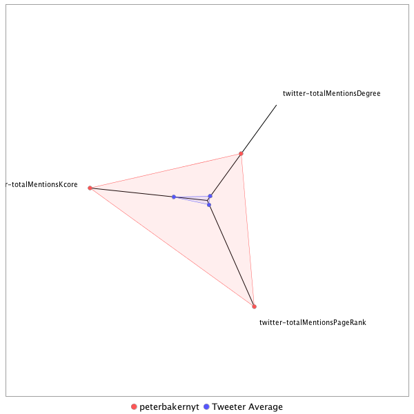

This tweeter has been identified as a super spreader. Its target audience and hashtag and word usage are analyzed below.
Basic Statistics
Number of direct followers 86030 The peak number of followers that the tweeter had during any time period. Number of retweeters 250 Number of agents that retweeted the key influencer. Number of secondary followers 43624608 The sum of the followers of those who retweeted the key influencer.
Measure Values of Super Spreaders node versus Tweeter Average
This compares the measure values of the key influencer with the average values across all tweeters. For each measure line, the center-point means zero and the end-point means the maximum score across all tweeters.

Where was the influencer?
The agent is not recorded as being in any locations. Either he tweeted without geo-tags or we have no information about the tweets he sent.
The agent and retweeters were in 41 different locations.

What hashtags did the influencer use?
This displays the top ranked hashtags that the influencer and its retweeters used.
Rank hashtag Count 1 Russia 518 2 Comey 511 3 BREAKING 476 4 Trump 432 5 AHCA 359 6 mtal 330 7 CNNsotu 309 8 ParisAgreement 305 9 TheLead 299 10 GA06 258 11 MemorialDayWeekend 235 12 ISIS 226 13 adopt 220 14 ComeyHearing 205 15 Iran 187 16 Manchester 186 17 AdoptDontShop 170 18 dog 169 19 Syria 167 20 VAGov 161 21 AMR 153 22 Qatar 152 23 ComeyFiring 143 24 ForTheRecord 135 25 ge2017 130 26 JamesComey 123 27 Obamacare 120 28 NAFTA 117 29 LondonBridge 113 30 MemorialDay 112 31 SCOTUS 110 32 trumprussia 106 33 WrongChoiceAct 102 34 cat 102 35 ksleg 101 36 covfefe 96 37 NYC 95 38 ThisIsGoingWell 95 39 ComeyTestimony 90 40 Nats 89 41 NorthKorea 89 42 rescue 88 43 Israel 87 44 FF 85 45 TheBachelorette 84 46 NATO 83 47 US 81 48 foster 79 49 ComeyDay 78 50 London 78 51 MTpol 77 52 ParisAccord 76 53 txlege 76 54 FBIDirector 75 55 travelban 75 56 Turkey 74 57 CongressionalBaseballGame 73 58 fakenews 73 59 climatechange 72 60 MOLeg 70 61 Afghanistan 69 62 Hardball 68 63 China 67 64 climate 67 65 DPRK 60 66 CATS 58 67 Putin 58 68 FBI 56 69 FOIA 56 70 sallyyates 56 71 ACA 54 72 SpecialReport 54 73 Paris 52 74 PressFreedom 52 75 Venezuela 52 76 WhiteHouse 52 77 copolitics 52 78 MTPDaily 51 79 TBT 51 80 MTP 50 81 BoroughMarket 49 82 ParisClimateDeal 49 83 dogs 49 84 OffScriptOn9 48 85 OTD 47 86 potusabroad 47 87 Alexandria 46 88 Senate 46 89 ThisWeek 46 90 spellingbee 46 91 tcot 45 92 healthcare 44 93 Caps 43 94 JFK100 43 95 ManchesterBombing 43 96 Saudi 43 97 CNN 41 98 GrenfellTower 41 99 yemen 41 100 Mosul 40
Tweet List
This displays all of the tweets of the influencer ordered from earliest to latest. Click on a tweet to see its status in Twitter.
Number Tweet ID Date Message 1 859482977239277569 2017-05-02 15:01:24-04 Trump & Putin have "very good” talk on Syria, including possibility of creating safe zones, White House says. US to attend cease-fire talks. 2 861632355701854208 2017-05-08 13:22:16-04 New presidents often blame predecessors for various things. Trump may be first to blame his national security adviser on his predecessor. 3 860155968948187136 2017-05-04 11:35:38-04 Trump’s 1st foreign trip hits centers of three major religions. “Tolerance is the cornerstone of peace” he plans to say per prepared remarks 4 860151862464524289 2017-05-04 11:19:19-04 Trump to make Saudi Arabia, Israel and Vatican his first foreign destinations since taking office. https://t.co/mwfwYIgaZs 5 862145368443822080 2017-05-09 23:20:48-04 Podesta: “Beyond credulity” to say Trump "fired Jim Comey because of the way he handled Hillary Clinton’s emails.” https://t.co/B0fiJRAKfS 6 862331628269576194 2017-05-10 11:40:56-04 Q: Mr. President, why did you fire Director Comey? Trump: "He wasn't doing a good job. Very simply. He was not doing a good job.” 7 862330722182467584 2017-05-10 11:37:20-04 Which White House aide thought the two people Trump should be seen with today are Russia’s foreign minister and Henry Kissinger? 8 862650373147852800 2017-05-11 08:47:30-04 Man in the middle: "Confidence in Rosenstein," GOP says. "Turned off on Mr. Rosenstein," Democrats say. @RebeccaRuiz https://t.co/HPeltXuehH 9 859012851289161728 2017-05-01 07:53:18-04 Trump makes Europe wistful even for George W. Bush, @carlbildt tells @sbg1 https://t.co/5QSZ4g0DqV 10 862134413945167873 2017-05-09 22:37:16-04 Meanwhile, Trump will meet with Sergey Lavrov, the Russian foreign minister, at the White House on Wednesday. 11 861218180848640002 2017-05-07 09:56:29-04 Another American detained in North Korea, bringing total to four. @choesanghun https://t.co/hSbYNHjuLz 12 863221271445876736 2017-05-12 22:36:03-04 Trump "resembles a quarterback who doesn’t call a huddle & gets ahead of his offensive line" @GlennThrush @maggieNYT https://t.co/J7HvBgwmnF 13 859050719424520192 2017-05-01 10:23:46-04 Duterte, the controversial Philippine leader, may blow off Trump's invitation to the White House after all. https://t.co/uCo4TVH8qX 14 862611625974673408 2017-05-11 06:13:32-04 Privately, Comey considered Trump "outside the realm of normal,” even “crazy." @maggieNYT @GlennThrush @nytmike https://t.co/wl1pyudmJ9 15 861562134903353345 2017-05-08 08:43:14-04 A “fairly revolutionary mood”: How a freshman senator become a Trump troller — and possible 2020 contender. @sbg1 https://t.co/ugUXIoiMlp 16 859583728103944192 2017-05-02 21:41:45-04 Republicans urge Trump to press Abbas over payments to families of attackers. https://t.co/gc1c7V0JRR 17 859204996696612864 2017-05-01 20:36:49-04 Trump weighed linking infrastructure & tax cuts but "we're probably not going to do that," Mnuchin says @arappeport https://t.co/SJKCnMSVnx 18 864604122665947136 2017-05-16 18:11:01-04 Trump asked Pence and Sessions to leave the room so that he could speak with Comey alone. @nytmike https://t.co/AJNaoZsYqL 19 864251104409866240 2017-05-15 18:48:14-04 HR McMaster to speak to journalists about reports of Trump disclosure to Russian officials. 20 864509734325411841 2017-05-16 11:55:57-04 McMaster: "I stand by my statement I made yesterday. What I’m saying is the premise of that article is false." 21 864248962978631680 2017-05-15 18:39:44-04 McMaster: “At no time were any intelligence sources or methods discussed.” Dina Powell goes further: “This story is false." 22 865969012047478784 2017-05-20 12:34:36-04 Tillerson calls on Iran to affirm free speech while standing next to minister of Saudi government that State says represses free expression. 23 865303606462951426 2017-05-18 16:30:31-04 Finally called on at a Trump news conference! Too bad I wasn’t there. 24 865602602335170560 2017-05-19 12:18:37-04 White House tells press pool that there will be no announcement of a new FBI director today before Trump takes off for Saudi Arabia. 25 867264129509150721 2017-05-24 02:20:56-04 Trump praises Duterte for doing an "unbelievable job on the drug problem" in the Philippines. @SangerNYT @maggieNYT https://t.co/9sGu7hJXgU 26 865256469473767424 2017-05-18 13:23:12-04 Many Israelis actually don’t care whether Trump moves embassy, says @ShalomLipner who served 7 prime ministers. https://t.co/Tk6e7zzIhS 27 864967704058494980 2017-05-17 18:15:45-04 In tapping Mueller as special counsel, Rosenstein picked an ally of Comey during Bush years. https://t.co/tRcLHZBCa2 28 864927617971093505 2017-05-17 15:36:28-04 White House @PressSec says Trump will meet with four candidates for FBI: Andrew McCabe, Frank Keating, Richard McFeely and Joe Lieberman. 29 865307543668752384 2017-05-18 16:46:09-04 Such a missed opportunity! Haven’t been called on at a press conference since Obama’s first term. Maybe next time I can get Sinclair’s spot? 30 865189393400823808 2017-05-18 08:56:40-04 After initial restraint, Trump decries "greatest single witch hunt of a politician in American history” @MarkLandler https://t.co/za8ohTbWMS 31 866673093728665601 2017-05-22 11:12:22-04 Netanyahu says US-Israeli “intelligence cooperation is terrific” and Trump denies exposing Israel in his conversation with Russian officials 32 864898641512857600 2017-05-17 13:41:19-04 The interests of congressional Republicans and Trump remain too closely aligned for a major rupture. @hillhulse https://t.co/yKM2UNYj28 33 869625804313026560 2017-05-30 14:45:23-04 Since he walked out after condemning unnamed sources, here's a question for @PressSec: How many times has White House briefed anonymously? 34 867784857258250240 2017-05-25 12:50:07-04 Trump refuses to commit to defense of NATO allies a day after aides said he would. @shearm @MarkLandler @jameskanter https://t.co/GWllkuofk6 35 867581557086834689 2017-05-24 23:22:16-04 Fox News reporter: "Gianforte grabbed Jacobs by the neck with both hands and slammed him into the ground behind him" https://t.co/cnhb06svwC 36 868274483680997376 2017-05-26 21:15:43-04 State Department quietly lifts refugee limit, which could nearly double number of people admitted. @GardinerHarris https://t.co/67nocHN7c8 37 868153983482855426 2017-05-26 13:16:53-04 In Philippines, Duterte jokes that his soldiers can commit up to three rapes in region where he imposed martial law. https://t.co/kofEx5WG55 38 869186802950844416 2017-05-29 09:40:57-04 Britain heads to an election. Is Theresa May another Hillary Clinton and Jeremy Corbyn a left-wing Trump? @sbg1 https://t.co/BUtZCX7w7X 39 868277828894281729 2017-05-26 21:29:00-04 Deripaska offers to cooperate with congressional inquiries for immunity but Hill balks. @BarryMeier @JesseDrucker https://t.co/NP7mO7RiSQ 40 869205946085629953 2017-05-29 10:57:01-04 Trump condemns anti-Muslim attack in Oregon and praises defenders, saying they "were standing up to hate and intolerance." 41 868875125625671680 2017-05-28 13:02:27-04 For just a minute, forget Trump and Obama and politics and read this and remember that life is a magical thing. https://t.co/BGDcGsQKXj 42 868062288653242368 2017-05-26 07:12:32-04 Gary Cohn to pooler @tarapalmeri re Trump Germany comment: "He said they're very bad on trade but he doesn't have a problem with Germany." 43 873251986023600128 2017-06-09 14:54:32-04 After Tillerson calls for calm, Trump assails Qatar as a "funder of terrorism at a very high level." 44 872841778965204992 2017-06-08 11:44:31-04 Comey on Trump request: “Yes, it rings in my ear as, ‘Who will rid me of this meddlesome priest?'” 45 872854772587560960 2017-06-08 12:36:09-04 McCain seems to be confusing the Clinton email case with the Russia investigation. 46 872840388738002945 2017-06-08 11:38:59-04 Comey says he no longer has copies of his memos of his talks with Trump but gave them to Mueller. 47 873596342769258496 2017-06-10 13:42:53-04 Lost in the he-said, he-said drama of Trump v. Comey was a warning about Russia: "They will be back." @SangerNYT https://t.co/t1ggVSPaKQ 48 872846079464808450 2017-06-08 12:01:36-04 Did Trump’s request amount to obstruction of justice? Comey: “I don’t know. That’s Bob Mueller's job to sort that out.” 49 873015304053456896 2017-06-08 23:14:02-04 Trump to hold news conference on Friday in Rose Garden with visiting Romanian president, first time he'll take questions since Comey hearing 50 872823358584434691 2017-06-08 10:31:19-04 The Russians were focused on hundreds and perhaps 1,000 targets in the US, Comey says. 51 873178891539689473 2017-06-09 10:04:05-04 Why is it an either/or choice? https://t.co/fff4kKImof 52 872885347159601154 2017-06-08 14:37:38-04 Kasowitz incorrectly says @nytimes story referenced memos before Trump tweet. Here’s story that ran before tweet: https://t.co/L7ywlijo3k 53 872822115803770880 2017-06-08 10:26:23-04 Comey says he took conversation with Trump to be “disturbing” but it is not for him to say whether it amounts to obstruction of justice. 54 874226401137872896 2017-06-12 07:26:31-04 The Shove Heard Round the World: Montenegro's leader talks Trump, NATO and Russia with @sbg1 https://t.co/MGMastw7RS https://t.co/ZMTtjJRLxU 55 873515143233241088 2017-06-10 08:20:13-04 Trump's lawyer also represents Oleg Deripaska, the Russian oligarch, and Sberbank, the Russian bank. @ShawnBoburg https://t.co/yoLOQZ11sW 56 872877471695335424 2017-06-08 14:06:21-04 Kasowitz: Trump "never pressured Mr. Comey. The president also never told Mr. Comey 'I need loyalty, I expect loyalty' in form or substance" 57 872842204187947009 2017-06-08 11:46:12-04 "I saw the two as touching each other but separate,” Comey says of Flynn probe and overall Russia investigation. 58 873998508713545728 2017-06-11 16:20:57-04 How a distorted tweet ricocheted though the ecosystem of fake news to target Comey. @jwpetersNYT https://t.co/wZ5w0Y6h1F 59 872810256262467584 2017-06-08 09:39:15-04 Key questions for Comey hearing: Did Trump step over line? Why didn't Comey speak out before? @mattfleg @emmarieNYT https://t.co/dSNEZXaL8Q 60 872821062446329857 2017-06-08 10:22:12-04 “Those were lies, plain and simple,” Comey says of the administration’s description of an FBI in disarray under him. 61 874326470797258752 2017-06-12 14:04:09-04 The prime minister is actually “grateful” for Trump shove. “This is what made Montenegro so famous,” he tells @sbg1 https://t.co/ApZm6HOHb4 62 874369649596661762 2017-06-12 16:55:44-04 Very true. https://t.co/NoVRYbhYpk 63 872885640001662981 2017-06-08 14:38:48-04 But not based on memos, based on two people who had heard Comey describe the dinner. https://t.co/t3g23eXhBx 64 872828471613030400 2017-06-08 10:51:38-04 Comey says that @nytimes story on Russia investigation was wrong. “In the main, it was not true,” he testifies. 65 873272767768125444 2017-06-09 16:17:07-04 House Intelligence Committee asks Mueller for copies of Comey memos and asks White House if Trump has tapes. 66 872843733749968896 2017-06-08 11:52:17-04 Comey says “there’s a big difference” between tweeting discontent with investigation and telling it to the FBI director. 67 873257247668928513 2017-06-09 15:15:26-04 Trump says he did not tell Comey he hoped he would drop the Flynn investigation but there would have been nothing wrong if he did. 68 872836817850163200 2017-06-08 11:24:48-04 Comey admits that after his dismissal, he asked a friend to share the contents of his memo with a reporter. 69 873241976187092992 2017-06-09 14:14:45-04 Trump aide Scavino violated federal law by calling for defeat of GOP lawmaker, special counsel finds. @EricLiptonNYT https://t.co/NwJw3FKIgD 70 872850382262853633 2017-06-08 12:18:42-04 Despite his firing, “the work’s going to go on as before,” Comey says of the Russia investigation. 71 872838293930594305 2017-06-08 11:30:40-04 Comey: "Why did he kick everybody out of the Oval Office? … That to me as an investigator is a very significant fact.” 72 872837610305200128 2017-06-08 11:27:57-04 Can’t remember the last time someone in DC openly acknowledged orchestrating a leak — and without any senator having even asked. 73 873191166270996480 2017-06-09 10:52:51-04 Reading the care that the amazing photographer @dougmillsnyt takes to set up the perfect shot is really interesting. https://t.co/ewMXVcHd5c 74 871700408275697664 2017-06-05 08:09:07-04 Mattis, McMaster and Tillerson got NATO pledge into Trump speech and were blindsided when he took it out. @sbg1 https://t.co/m4g2tkrySb 75 871758236143276032 2017-06-05 11:58:54-04 Lawyer who was to head Trump’s DOJ civil division (& Kellyanne’s husband) says Trump tweets “won’t help” travel ban. https://t.co/47O9T8KWDu 76 871352329215324164 2017-06-04 09:05:58-04 Trump responds to terrorist attack in Britain by assailing London mayor and gun control advocates. https://t.co/Wr1bY6MXpU 77 870373789569347584 2017-06-01 16:17:36-04 Elon Musk quits presidential advisory councils: "Climate change is real. Leaving Paris is not good for America or the world." 78 870325278211534850 2017-06-01 13:04:50-04 Trump makes clear he plans to continue tweeting even as lawyers advise him not to. @GlennThrush https://t.co/sn89ZAf4FM 79 871929094115667968 2017-06-05 23:17:50-04 Trump twitter slap at Justice Department over travel ban reflects growing frustration with Sessions. @maggieNYT https://t.co/NFpFOuSnU3 80 872184891672326144 2017-06-06 16:14:17-04 The 27 words Trump refused to say: @sbg1 gets the language excised from his NATO speech. https://t.co/mUE76FeaDt 81 870477975850012674 2017-06-01 23:11:36-04 The day after Trump said he hadn't talked in a long time with Roger Stone, Trump called Roger Stone. @RyanLizza https://t.co/QVG3VmdOfX 82 872473636359352320 2017-06-07 11:21:39-04 Trump declines to respond when reporters ask if he still has confidence in Sessions. “Thank you,” he mouths, heading to helicopter. 83 872424008741998594 2017-06-07 08:04:27-04 Trump has selected former federal prosecutor Christopher Wray to be his new FBI director. @GlennThrush https://t.co/Kw8eMRKptn 84 872571228300734467 2017-06-07 17:49:27-04 Trump lawyer says president is pleased Comey confirmed Trump not being investigated. “The president feels completely and totally vindicated” 85 871716636759400448 2017-06-05 09:13:36-04 Under Trump, the niceties of diplomatic relations have never had such a reality show flavor. https://t.co/BTvqfkwZ7B 86 872165096843350016 2017-06-06 14:55:37-04 White House @PressSec on whether Trump has confidence in Sessions: “I have not had that discussion with him.” 87 871911929077542912 2017-06-05 22:09:37-04 In their own way, some career diplomats stage their own revolt against Trump. @MarkLandler https://t.co/sYp65aRnbm 88 871689910947901441 2017-06-05 07:27:24-04 Trump doubles down on original “travel ban.” https://t.co/HftQeU5O0x 89 870363642658729988 2017-06-01 15:37:17-04 Trump: “The United States will withdraw from the Paris climate accord” but will begin negotiations to reenter or forge new, fairer pact. 90 870277067526602752 2017-06-01 09:53:16-04 Trump Opts Not to Move Embassy to Jerusalem, at Least for Now https://t.co/MaWOBV3a41 91 869990880245039104 2017-05-31 14:56:04-04 White House now says all questions on investigations will be fielded by president’s personal attorney. 92 869993386048188416 2017-05-31 15:06:01-04 What did Trump mean by covfefe tweet? @PressSec hints that it was some kind of code. President and small group know what it means, he says. 93 864935865600139264 2017-05-17 16:09:14-04 Saudis invite Sudan’s Bashir, under indictment for genocide, to meeting with Trump. @SominiSengupta @rickgladstone https://t.co/KzwX3q0gM9 94 862331246680182784 2017-05-10 11:39:25-04 Days before he was fired, Comey asked for more funds for Russia investigation. @AllMattNYT @mattapuzzo https://t.co/EyOhUIHnjT 95 864596094633873409 2017-05-16 17:39:07-04 White House refutes Comey: “The president has never asked Mr Comey or anyone else to end any investigation” @nytmike https://t.co/AJNaoZsYqL 96 867309319976476672 2017-05-24 05:20:30-04 Per Vatican pool, the pope and Melania were actually talking about potizza, which apparently is a Slovenian treat. Not pizza. https://t.co/voLo76YdI1 97 864592174347956225 2017-05-16 17:23:32-04 Comey Memo Says Trump Asked Him to End Flynn Investigation https://t.co/UHxQLBXvnq 98 863899173309100032 2017-05-14 19:29:48-04 Unnerved, Republican senators show signs of breaking away from Trump in key areas. @jestei https://t.co/5AkSxfbizP 99 869988950961778688 2017-05-31 14:48:24-04 Trump calls Ghani to “relay our deepest condolences” over bombing in Kabul, @PressSec says. He promised assistance in catching perpetrators 100 869201377943326721 2017-05-29 10:38:52-04 "Without them we probably would be dead": Oregon honors two men who died defending women in anti-Muslim attack. https://t.co/Z61xDY2KyU 101 865995660134412290 2017-05-20 14:20:29-04 Certainly true that Trump has made clear he will not make human rights a public priority of his foreign policy. https://t.co/EYGK68LyF3 102 865991996225335298 2017-05-20 14:05:55-04 Selective concern for human rights of course was not invented by this administration. Pretty much a tradition of every president. https://t.co/bwebf3n01o 103 864871132289277955 2017-05-17 11:52:01-04 Why is Trump not going to Masada? White House couldn’t land helicopter without damaging historic site. https://t.co/7O0jHCntNG 104 863758057549041664 2017-05-14 10:09:03-04 .@danbalz, the most thoughtful and tempered man in DC, says Comey affair leaves White House credibility in tatters. https://t.co/2grf53Bzja 105 863755751529078784 2017-05-14 09:59:53-04 Trump is like pilot who flies into turbulence, then blames jittery passengers on flight attendants. @PhilipRucker https://t.co/paT5Xp6xZo 106 862437032236384258 2017-05-10 18:39:46-04 Why did Trump agree to meet with Lavrov today? Because Putin personally asked him to, @sbg1 reports. https://t.co/qQZZloVIfl 107 859371918335635456 2017-05-02 07:40:06-04 "Trump is learning history as he governs," Gingrich says. https://t.co/Snxn96CGIa 108 867805234860634112 2017-05-25 14:11:05-04 Aides say what Trump won't-that he is committed to NATO Article 5. “We’re not playing cutsie with this. He’s fully committed" @PressSec says 109 864535411254808576 2017-05-16 13:37:58-04 The intelligence Trump discussed with Russian officials came from Israel. @adamgoldmanNYT @AllMattNYT @mattapuzzo https://t.co/TDLlWbODrL 110 866944173764739073 2017-05-23 05:09:32-04 Trump condemns Manchester attack as a “very horrible morning in death.” @shearm https://t.co/xjQsoHe8om 111 864248421439463425 2017-05-15 18:37:35-04 Trump said to boast about intelligence with Russian foreign minister and ambassador. @EricSchmittNYT @AllMattNYT https://t.co/G0Nu8PPrRD 112 870093394596560896 2017-05-31 21:43:25-04 Trump weighs rolling back aspects of Obama diplomatic opening to Cuba, hopes to announce in Miami. @juliehdavis https://t.co/ZoqOU216Ay 113 876198097906544640 2017-06-17 18:01:20-04 Scalise office says he had another operation and remains in serious condition but "is more responsive and is speaking with his loved ones." 114 876192803403030530 2017-06-17 17:40:17-04 In Mexico, a sense of humor about international politics. https://t.co/CCbc3hlwD7 115 876604870786260992 2017-06-18 20:57:42-04 Vehicle hits pedestrians in London in what police are calling a "major incident." https://t.co/JcFjjCMqO6 116 869195137045463040 2017-05-29 10:14:04-04 Inside the shadowy world of Russia's battle against the West, a host of foot soldiers offered support and money. https://t.co/TZAqQdSy2C 117 868149884985249792 2017-05-26 13:00:36-04 Is there something particularly American about leaking? Yes, @ScottShaneNYT says, there is. https://t.co/4K7IIE2MK9 118 868832939248930818 2017-05-28 10:14:49-04 He's back and he's on Twitter again, berating the news media for its "fabricated lies." https://t.co/zAQaEcGsKI 119 868512580431749124 2017-05-27 13:01:50-04 Despite boiling fury on the left, resistance to Trump has yet to translate to a major electoral victory. @jmartNYT https://t.co/7fyMc8yoiA 120 867797726628655106 2017-05-25 13:41:15-04 Trump wrestling with human rights policy; so far human rights are losing, says Abrams, once choice for #2 at State. https://t.co/ydWiGmAiF5 121 868934756196646913 2017-05-28 16:59:24-04 Realize it might be too much to read more than one story but we actually do publish more than one. https://t.co/09KuM5lwbh https://t.co/gK0dQE0LmG 122 869660265356419073 2017-05-30 17:02:19-04 Is there any other way?? https://t.co/sIqiLgxPjZ 123 867722259326173184 2017-05-25 08:41:22-04 Europeans awaited Trump's arrival "the way earthlings might await the impact of an asteroid." @StevenErlanger https://t.co/WMnLVSDgfi 124 868135094128697344 2017-05-26 12:01:50-04 Hillary Clinton trolling Trump during Wellesley commencement, implicitly comparing him to Nixon amid Watergate. 125 869856320731611136 2017-05-31 06:01:22-04 Anonymous White House spokesman decries @CNN story based on anonymous sources. https://t.co/kFAIGHBtNM 126 867539364825444352 2017-05-24 20:34:37-04 Top Russian officials discussed how to influence Trump through advisers. @mrosenbergNYT @adamgoldmanNYT @mattapuzzo https://t.co/yV5vQPJJYv 127 869749911146741761 2017-05-30 22:58:32-04 In op-ed, McMaster and Cohn assert that Trump committed to NATO Article 5, though Trump never actually said that. https://t.co/Lwj0rkwW5x 128 866458292851138560 2017-05-21 20:58:49-04 Amid squabbles, Israel prepares to host Trump. Netanyahu orders ministers to attend arrival ceremony. @IKershner https://t.co/P1H190kMX5 129 867305022178054145 2017-05-24 05:03:25-04 Pope to Melania Trump: "What do you give him to eat, pizza?” Melania: "Pizza." (per pooler @carolelee) 130 863227774202458112 2017-05-12 23:01:54-04 Trump increasingly unhappy with Priebus, Dubke and Spicer, and may replace press secretary. @GlennThrush @maggieNYT https://t.co/J7HvBgwmnF 131 864148000309989376 2017-05-15 11:58:33-04 Obama recasts his decision not to enforce red line by striking Syria as act of “political courage.” @NolanDMcCaskill https://t.co/yt1HKBudEL 132 862456648471805952 2017-05-10 19:57:43-04 Chaffetz asks Justice inspector general to expand probe into Comey to include Trump's decision to fire him too. https://t.co/2ElAuoy1MH 133 862365187051053056 2017-05-10 13:54:17-04 “He’d been considering letting Director Comey go since the day he was elected,” says Trump spokeswoman @SarahHuckabee 134 862366041661472768 2017-05-10 13:57:40-04 “It’s startling that Democrats aren’t celebrating,” says @SHSanders45 of White House. 135 864875996163571714 2017-05-17 12:11:20-04 Trump says he’s been treated worse than any president. "Adversity makes you stronger. don’t give in, don’t back down,” he tells graduates. 136 864595738503806976 2017-05-16 17:37:42-04 Trump to Comey, per memo: “I hope you can see your way clear to letting this go, to letting Flynn go.” @nytmike https://t.co/AJNaoZsYqL 137 864532406308671489 2017-05-16 13:26:02-04 Trump speech at Masada is called off, due to logistical and weather challenges. Instead, he’ll deliver it at the Israel Museum in Jerusalem. 138 864148586367512576 2017-05-15 12:00:52-04 Condi Rice is “furious” about Russian election meddling and imagines Kremlin is “chuckling” about disruption. @sbg1 https://t.co/HvqE7wDdkc 139 860248404932296705 2017-05-04 17:42:57-04 The ACLU won’t sue over Trump’s religious liberty order after all because it "was an elaborate photo-op with no discernible policy outcome." 140 861648984372371456 2017-05-08 14:28:21-04 Senator Chris Murphy looks — and tweets — like a man running for president. @sbg1 https://t.co/ugUXIoiMlp 141 859847210544058368 2017-05-03 15:08:44-04 “They feel slighted”: Putin’s circle miffed that Trump meets with Theresa, Justin but not Vladimir. @NeilMacFarquhar https://t.co/UlTjxS9Ezm 142 862329558497972228 2017-05-10 11:32:42-04 Meeting with Henry Kissinger of all people, Trump tells reporters that he fired Comey “because he was not doing a good job." 143 862007218874593282 2017-05-09 14:11:50-04 White House @PressSec says Trump won’t make a decision on whether to withdraw from Paris climate change pact until after his European trip. 144 859054822959480832 2017-05-01 10:40:04-04 Energized by antipathy toward Trump, a dozen Democrats eye 2020, led by septuagenarian trio. @alexburnsNYT @jmartNYT https://t.co/Ml1Yt8ctfB 145 872539699545595906 2017-06-07 15:44:10-04 Sanders says staff told about FBI pick at “appropriate time." Q: What’s the appropriate time? Sanders: “When the president lets you know.” 146 872466954526896129 2017-06-07 10:55:06-04 Mike Rogers says “I have never been directed to do anything i believed to be illegal” or inappropriate. 147 872571762747351042 2017-06-07 17:51:34-04 In other news, Mark Corallo, former spokesman for Bob Livingston and John Ashcroft, is now representing Marc Kasowitz. 148 872485121097703424 2017-06-07 12:07:17-04 Scoop: @amirtibon gets Obama documents detailing Israeli-Palestinian peace plan that fell apart in 2014. https://t.co/mGZ0glNswi 149 872472532414287872 2017-06-07 11:17:16-04 Coats and Rogers refuse to answer Rubio who asks whether he has ever been asked to intervene in an investigation. 150 872449259538448384 2017-06-07 09:44:47-04 GOP cheered when Clinton executive privilege claims were rejected. Now they must live with precedent. @joshgerstein https://t.co/U1oWUVyPkL 151 871901331417698304 2017-06-05 21:27:31-04 Sarah Sanders: "I don't think the president cares what you call it." Trump: It's a travel ban "not some politically correct term." 152 871117903512424448 2017-06-03 17:34:27-04 For Infrasructure, Trump plans to reduce federal role, rely on state, city and private funds @juliehdavis @katekelly https://t.co/JgT45yfJMc 153 872628847266721792 2017-06-07 21:38:24-04 In a city of hardened political infighters, Trump the novice finds himself shadow boxing with Comey. @GlennThrush https://t.co/qePqT0gYNB 154 872825401151823872 2017-06-08 10:39:26-04 Comey says he didn’t mistrust either Bush or Obama enough to take notes after conversations with them. "I didn’t feel the need … " 155 873969756801552389 2017-06-11 14:26:42-04 Amid rancor, with protests guaranteed, Trump weighs scrapping state visit to Britain. @GlennThrush https://t.co/h49Ibmrdw7 156 872824847856013312 2017-06-08 10:37:14-04 Why did Comey take notes of meetings with Trump? “I was honestly concerned he might lie about our meeting.” 157 875035350263115776 2017-06-14 13:00:59-04 Virginia Shooting Suspect Was Distraught Over Trump’s Election, Brother Says. @npfandos https://t.co/H8yKTa5xS1 158 872828773263167489 2017-06-08 10:52:50-04 Comey: "I took it as direction. … I didn’t obey that but that’s the way I took it.” 159 873256466043613184 2017-06-09 15:12:20-04 After refusing to do so in Brussels, Trump says "I'm committing the United States to Article 5." 160 872811391127867392 2017-06-08 09:43:46-04 Appalling. Disturbing. Partisan. That's how Democrats used to describe Comey. Now they embrace him. @hillhulse https://t.co/3KRy08mOs6 161 873253199830036481 2017-06-09 14:59:21-04 Trump says money "is pouring in" to NATO but the issue isn't money for NATO, the issue is what allies spend on their own defense. 162 872518172343140363 2017-06-07 14:18:37-04 Comey to Tell Senators Trump Pressured Him to Say He Was Not Under Investigation @nytmike https://t.co/sCuHZAF2Zu 163 871792378792816640 2017-06-05 14:14:34-04 Trump will not block Comey from testifying by asserting executive privilege, @SHSanders45 says. https://t.co/IzprWEdUoF 164 870733581194231809 2017-06-02 16:07:17-04 Does Trump still believe climate change is a hoax? White House won’t say. https://t.co/I8cfpYu5sL 165 871794927264555009 2017-06-05 14:24:42-04 Why is @PressSec not briefing today? "He is taking on a little bit of extra duty at this point,” @SHSanders45 says. 166 870847819376201728 2017-06-02 23:41:14-04 Trump doesn’t plan to try to block Comey testimony next week by citing executive privilege, officials tell @nytmike https://t.co/jf2Bfycazr 167 872572735721005056 2017-06-07 17:55:26-04 Also worth noting that Mark Corallo was on the same side as Jim Comey during the famous hospital room confrontation with Bush and Cheney. 168 872543579771719680 2017-06-07 15:59:35-04 In statement, Trump grieves for Iranians: "We underscore that states that sponsor terrorism risk falling victim to the evil they promote." 169 872519009127849984 2017-06-07 14:21:57-04 Trump asked Comey what could be done to "lift the cloud" by making clear Trump wasn't being investigated. @nytmike https://t.co/sCuHZAF2Zu 170 872490276681547777 2017-06-07 12:27:46-04 RT @agearan: State Dept condemns terror attacks in Tehran: "We express our condolences ... and send our thoughts and prayers to the people… 171 872487302118998022 2017-06-07 12:15:57-04 Poll predicts Tories will lose majority in Parliament in tomorrow's British election. https://t.co/763sDorZd1 172 872486729558761472 2017-06-07 12:13:41-04 RT @tackettdc: & https://t.co/exOzNagAsp 173 872479505025294338 2017-06-07 11:44:58-04 RT @nytimesworld: “For A.K., there were no laws, no skies, no limits.” Adnan Khashoggi, the flamboyant Saudi arms trader, has died. https:/… 174 872474001993592833 2017-06-07 11:23:06-04 @RepStevenSmith Thanks for the note, congressman. This is a great week for the NY Times, as is every week when there’s news to cover. 175 872472751432495105 2017-06-07 11:18:08-04 Coats and Rogers also refuse to answer Rubio who asks whether either has been asked (not directed or pressured) to provide false information 176 872468583351291905 2017-06-07 11:01:34-04 Coats: “I have never felt pressured to intervene or interfere in any way” with "an ongoing investigation.” 177 872467610159505409 2017-06-07 10:57:42-04 Coats says it’s not appropriate to discuss conversations with president in public session. 178 872467491733348352 2017-06-07 10:57:14-04 Rogers refuses to confirm or deny that a memo was written about concerns stemming from conversation with Trump. 179 872437183340302336 2017-06-07 08:56:48-04 Tomorrow's British election has major implications for Europe and US. Listen to BBC Worldwide documentary by @sbg1 https://t.co/cplVvxFBdy 180 872419594488741888 2017-06-07 07:46:54-04 Trump picks Chris Wray for FBI director 181 872416459204505600 2017-06-07 07:34:27-04 RT @maggieNYT: @peterbakernyt Sessions statement was less an ultimatum and more a manifestation of the group misery many ppl in admin have… 182 872411106106634241 2017-06-07 07:13:10-04 RT @maggieNYT: Sessions was also annoyed when Christie was appointed to the opioids initiative led by Kushner https://t.co/oooejxozWs 183 872255526901604352 2017-06-06 20:54:57-04 RT @kyledcheney: Wow. Here's the commitment to NATO's Article 5 that was cut from Trump's speech ----> https://t.co/LCsaS2HRIU @sbg1 strik… 184 872255382823088128 2017-06-06 20:54:23-04 RT @sbg1: A Very British Election, my new documentary for BBC World Service is out before Thursday vote. Hope you can listen! https://t.co/… 185 872208504823480320 2017-06-06 17:48:07-04 RT @sbg1: NEW: The 27 Words Trump Wouldn’t Say https://t.co/TzTzeHeLqK via @politico mag 186 872173767962877952 2017-06-06 15:30:05-04 “I wish him luck,” Trump says when asked about Comey’s testimony this week. 187 872162363402833922 2017-06-06 14:44:46-04 Reading Michael Oren’s “Six Days of War,” written from historian rather than politician vantage point. Fascinating look at the war of 1967. 188 872119935954276352 2017-06-06 11:56:10-04 RT @mfullilove: The video of my exchange with #Mattis, referred to in @sbg1's @POLITICOMag article, is available here: https://t.co/ZDtUyQV… 189 872117025954566144 2017-06-06 11:44:36-04 “In some ways, this post-post-Cold War is more dangerous than the Cold War”: Strobe Talbott on Russia. @sbg1 https://t.co/JHoUxC6TQi 190 872115999650271232 2017-06-06 11:40:32-04 @Timothyjsims2 @adamgoldmanNYT @ScottShaneNYT With all respect, then it’s possible you weren’t paying attention. We’ve written about this issue a lot. 191 872115692685987841 2017-06-06 11:39:18-04 After Lebanon bans “Wonder Woman” because Gal Gadot is Israeli, Jordan weighs following suit. https://t.co/GgATqzXwp1 192 872112052835414017 2017-06-06 11:24:51-04 @Timothyjsims2 @adamgoldmanNYT @ScottShaneNYT Actually we did, quite a lot. Our own reporter was among those who faced legal jeopardy for refusing to identify sources. 193 872088604062998529 2017-06-06 09:51:40-04 Intelligence contractor charged with leak after report on Russian effort to hack election officials. @charlie_savage https://t.co/sm8SpeyTZx 194 871920241718300676 2017-06-05 22:42:39-04 RT @nytimesworld: ISIS says it was one of its "soldiers" who took a woman hostage in Melbourne; police killed him, rescued her. https://t.c… 195 871906777624973313 2017-06-05 21:49:09-04 RT @ScottShaneNYT: @adamgoldmanNYT Of course, that's following the precedent of Obama, whose administration set the record for leak prosecu… 196 871906638869004293 2017-06-05 21:48:36-04 RT @maggieNYT: From the "wiretapp" tweet to Comey dismissal, Trump frustration w Sessions looms large @peterbakernyt and me https://t.co/Rc… 197 871884358499655680 2017-06-05 20:20:04-04 RT @thomaswright08: Hugely important story. @sbg1 gets the inside scoop on how Trump took out an endorsement of NATO's Article 5 from his s… 198 871837875343687689 2017-06-05 17:15:22-04 RT @RNicholasBurns: Important Susan Glasser piece on Trump's #NATO disaster. https://t.co/U9mKGibqB9 via @politicomag 199 871835702387933184 2017-06-05 17:06:44-04 “They didn’t know it had been removed”: How top advisers were blindsided by change in Trump’s NATO speech. @sbg1 https://t.co/m4g2tkrySb 200 871824558780755969 2017-06-05 16:22:27-04 RT @blakehounshell: SCOOP: Trump’s national security team was blindsided by his NATO speech https://t.co/7pwzSrpbB9 201 871776985068032001 2017-06-05 13:13:24-04 RT @anneapplebaum: Trump WAS supposed to support Article 5 in his Nato speech. At the last minute, he took it out. https://t.co/yuRy6AMSdA 202 871764818595909637 2017-06-05 12:25:04-04 Russia’s New Times magazine, one of the few voices of opposition, closes print edition. https://t.co/UzLJmWAgKp 203 871758684715659264 2017-06-05 12:00:41-04 RT @sbg1: Great to talk with @strobetalbott for this week's Global Politico. https://t.co/WTRTikH0bW 204 871740654644277249 2017-06-05 10:49:02-04 RT @shearm: It also evicerates a senior admin official who told us with straight face on AF1 that no one in admin had ever heard of Article… 205 871740597316579330 2017-06-05 10:48:49-04 RT @sbg1: 'Washington is now the center of instability in the world': this week's convo with the great @strobetalbott: https://t.co/NXY0Syj… 206 871711571822751744 2017-06-05 08:53:28-04 @carolelee Yup. He also said in an op-ed (in your paper) that Trump did reaffirm Article 5, which was flatly not true. 207 871553083066773504 2017-06-04 22:23:42-04 @Eeindc That’s not my conclusion, it was the conclusion of Condi Rice, Colin Powell, Steve Hadley and others who worked there every day. 208 871552567356129281 2017-06-04 22:21:39-04 @MarkReaves10 Thanks for the note. NYT style is President Lastname on 1st reference and Mr. (or Ms.) Lastname after that. True for every president. 209 871470539239501824 2017-06-04 16:55:42-04 16 years after Bush pulled out of Kyoto, lessons for Trump about damage control. But it may not make a difference. https://t.co/FrTKtz5sym 210 871364464578351104 2017-06-04 09:54:12-04 The 1967 war ensured Israel’s existence but ex-soldier @hirshgoodman argues it may have done as much harm as good. https://t.co/ZltiUWeMxe 211 871207795353411584 2017-06-03 23:31:39-04 Six killed, dozens injured in two terror attacks in London. @StevenErlanger https://t.co/BWf0NKvYQ4 212 870848663739912194 2017-06-02 23:44:35-04 @AdamMSowards I hear you but don’t you think what a person believes guides what he or she does? 213 870825318248067073 2017-06-02 22:11:49-04 “Like a major win at a football game”: Small businesses cheer Trump’s decision to nix climate pact. @Landonthomasjr https://t.co/OSU5vAJW3J 214 870696440829366273 2017-06-02 13:39:42-04 Trump returns 6,700-page report on CIA detention to Senate; will it ever be public? @MarkMazzettiNYT @AllMattNYT https://t.co/OO5a7M6YVv 215 870695872832520192 2017-06-02 13:37:27-04 @JonathanLanday @MarkMazzettiNYT That’s interesting. But can’t subsequent presidents prevent their predecessors’ libraries from releasing select documents? 216 870695461329313793 2017-06-02 13:35:49-04 @imaginepeace5 @MarkMazzettiNYT Ouch. Maybe that was a patriotically minded Russian hacker messing with my spellcheck! 217 870683888930115588 2017-06-02 12:49:50-04 RT @comradewong: Congrats to @hkbeech on new job as NYT Southeast Asia bureau chief and to Ben Solomon as NYT visual correspondent posted t… 218 870659467846791168 2017-06-02 11:12:47-04 Mick Mulvaney talking with our @arappeport on Facebook Live right now. Check it out. https://t.co/J515equzQ2 219 870610008639242241 2017-06-02 07:56:15-04 RT @nytimes: Pittsburgh before Paris: @shearm traces Trump's decision to withdraw from the Paris agreement to its beginning https://t.co/f2… 220 870468856858521600 2017-06-01 22:35:22-04 In pulling out of climate pact, Trump aims to show core supporters that he's fighting for them. https://t.co/37RENirVui 221 870409230796435456 2017-06-01 18:38:26-04 Trump speaks with Germany's Merkel, France’s Macron, Canada's Trudeau and Britain’s May to explain withdrawal from climate change accord. 222 870400082918559744 2017-06-01 18:02:05-04 RT @sbg1: Reminder: Trump was literally planning embassy move to Jerusalem as 1st act, as @senbobcorker revealed in february https://t.co/g… 223 870366063632031745 2017-06-01 15:46:54-04 Obama reacts to Trump withdrawal from Paris, saying the United States "joins a small handful of nations that reject the future." 224 870363780475228161 2017-06-01 15:37:50-04 Trump: "And if we can, that’s great. And if we can’t, that’s fine." 225 870363738288914432 2017-06-01 15:37:40-04 Trump: "So we’re getting out but we will start to negotiate and we will see if we can make a deal that’s fair.” 226 870327905917816832 2017-06-01 13:15:17-04 Putin backs off blanket denial, says “patriotically minded” Russian hackers may have meddled in US election. https://t.co/SHlHtJcKXP 227 870327283860602882 2017-06-01 13:12:49-04 Hours before its premiere in Lebanon, “Wonder Woman” is banned by because Gal Gadot is Israeli. @RubyMellen https://t.co/QZr7rsisF0 228 870315541071892483 2017-06-01 12:26:09-04 Comey to testify publicly before Senate Intelligence Committee next Thursday at 10 a.m. 229 870296035003957249 2017-06-01 11:08:38-04 While "Israel is disappointed that the embassy will not move at this time,” Netanyahu office says "we appreciate” Trump support for Israel. 230 870285958956150784 2017-06-01 10:28:36-04 Reupping Corker interview with @sbg1 saying Trump was ready to "move the embassy at 12:01 on Jan. 20” to Jerusalem. https://t.co/Tvwq1DWquI 231 870253588051787776 2017-06-01 08:19:58-04 Kennedy tried it. So did Nixon. And there's a reason why back channels during transitions are fraught. @SangerNYT https://t.co/Yh03bGxSdD 232 869996114899902467 2017-05-31 15:16:52-04 White House @PressSec abruptly ends briefing after barely 10 minutes. 233 869619790914228224 2017-05-30 14:21:29-04 Trump met with EPA’s Pruitt today to discuss Paris climate pact. "Ultimately he wants a fair deal for the American people,” @PressSec says. 234 869537351722295296 2017-05-30 08:53:54-04 Dubke steps down as White House communications director as Trump weighs broader staff shakeup. https://t.co/HhKh0SHo8z 235 869996406156611585 2017-05-31 15:18:01-04 Covfefe? "The president and a small group of people know exactly what he meant,” says @PressSec 236 867849279955763200 2017-05-25 17:06:06-04 Russian opposition activist convicted of “spreading extremist materials” for sharing John Oliver clip. https://t.co/ZKKRYyNSbC 237 870089981267767296 2017-05-31 21:29:51-04 Nice payday for Joe Lockhart: Obamas buy their rental home in DC for $8.1 million. @katierogers https://t.co/fy0Tb36r7l 238 870061045565534209 2017-05-31 19:34:52-04 @TheRightDuff Paging Josh Lyman! 239 870060798542041088 2017-05-31 19:33:53-04 @LindaOJ63 Similar to other White Houses that have faced investigations, including Clinton's. 240 870060434367401988 2017-05-31 19:32:27-04 @JamesHamm19 Different attorney 241 870060315349798920 2017-05-31 19:31:58-04 @jeebling @everyhumanknows Associate justices aren't involved in impeachment trials. The Chief Justice presides over a trial conducted by the Senate. 242 870059843142512641 2017-05-31 19:30:06-04 @samboh Okay, will try! Sometimes it's hard, you know? 243 869997966840315904 2017-05-31 15:24:13-04 Trump promises decision on Paris climate pact “very soon,” per pooler @PhilipRucker 244 869993803188490242 2017-05-31 15:07:41-04 @stealthygeek Different attorney 245 869989247771709445 2017-05-31 14:49:34-04 @sofiegeorge @nytpolitics Um, no he wasn’t. 246 869957738071171072 2017-05-31 12:44:22-04 @roslynbraun31 @nik5298 @maggieNYT Well, I’m certainly sorry you feel that way. That’s been my professional goal for 31 years. 247 869956836132360192 2017-05-31 12:40:47-04 RT @ARothWP: Huge loss. Alums include @EllenBarryNYT, WaPo buro chief @davidfilipov @ABarnardNYT @CatherineBelton and many more: https://t.… 248 869860063204212737 2017-05-31 06:16:14-04 @realDonaldTrump The president is awake and decided to have fun with his now-deleted tweet: "Who can figure out the true meaning of "covfefe" ??? Enjoy!" 249 869854880084742147 2017-05-31 05:55:39-04 RT @nytimes: Blast in Diplomatic Area of Afghan Capital Kills, Wounds 50 https://t.co/ccQqFFivlR 250 869854792692228096 2017-05-31 05:55:18-04 RT @nytpolitics: The White House communications director said he would step down, but 4 possible successors declined to be considered https… 251 869854204717912065 2017-05-31 05:52:58-04 RT @nytimes: No one at the White House could immediately be reached for comment about President Trump's "covfefe" tweet https://t.co/tjLibs… 252 869756900879073280 2017-05-30 23:26:19-04 As Trump nears decision on Paris climate pact, he faces pressure from both sides. @shearm @dianecardwell https://t.co/Ewgc4HVOxa 253 869737060965515264 2017-05-30 22:07:28-04 @nik5298 @maggieNYT Appreciate the question. It’s not a reporter’s job to cheer for or against a politician but to report on what they do with factual context. 254 869735648235851777 2017-05-30 22:01:52-04 RT @EricJGreenberg: We have some great reporters lined up to take you through today's big stories on the @11thHour - @costareports @AshleyR… 255 869655663030546433 2017-05-30 16:44:02-04 RT @nytimesworld: ISIS again takes credit for targeting children and families. This time at an ice cream shop on a busy night. https://t.co… 256 869645375417856000 2017-05-30 16:03:09-04 Fake news. Julie hates me. It’s so sad. (Kidding! She’s the absolute best and just having fun…) https://t.co/z6SPyuBsUK 257 869643528170868736 2017-05-30 15:55:48-04 RT @nytpolitics: Trump is interviewing two more F.B.I. director candidates: Christopher Wray and John Pistole. Learn more about them: https… 258 869577691451850752 2017-05-30 11:34:12-04 Lebanon’s economy ministry seeks to ban “Wonder Woman” movie because star Gal Gadot is Israeli. https://t.co/hDyOxiLN68 259 869289825060491265 2017-05-29 16:30:19-04 “It was going to be the Brexit Election but it seems that other concerns were dominating.” @sbg1 https://t.co/BUtZCX7w7X 260 869216041959927815 2017-05-29 11:37:08-04 True enough that it came from the official account, yes. https://t.co/C2zLtBU3UZ 261 868978168929165313 2017-05-28 19:51:54-04 RT @nytimes: Three men stood up to an anti-Muslim attack in Portland, Oregon. Two paid with their lives. https://t.co/RBLfMQvj2r 262 868939714836955136 2017-05-28 17:19:06-04 RT @CNN: There's one thing clear about President Trump's first trip abroad: He kept the press at arm's length https://t.co/VnyG5NvzUh https… 263 868924848000700416 2017-05-28 16:20:02-04 RT @JenGriffinFNC: Must read...Aleppo After the Fall https://t.co/Ko2wimRwot 264 868921855763255302 2017-05-28 16:08:08-04 It's hard to upstage Trump, but Melania drew a lot of admiring attention on their overseas trip. @MarkLandler https://t.co/mvvxKvO8HO 265 868884934680817666 2017-05-28 13:41:26-04 Kelly defends reported Kushner discussion about setting up secret channel to Russia as “a good thing.” @mattfleg https://t.co/JW6sAK4Ukb 266 868875982274473984 2017-05-28 13:05:51-04 For just a minute, forget Trump, Obama, politics; read this and remember that life is a magical thing. @DeliaEphron https://t.co/BGDcGsQKXj 267 868857383442944001 2017-05-28 11:51:57-04 After Trump clash Merkel says “the times in which we could rely fully on others, they are somewhat over." @asmalenyt https://t.co/XOaaMb77ea 268 868839453095329792 2017-05-28 10:40:42-04 RT @BrookingsFP: .@MichaelEOHanlon argues that Trump's omission in Brussels on NATO's Article 5 isn't as big a deal as some think: https://… 269 868541979281551360 2017-05-27 14:58:39-04 Trump heads home to confront political challenges as Kushner faces questions. @maggieNYT @GlennThrush @juliehdavis https://t.co/tRZqhxVyw7 270 868283240855023616 2017-05-26 21:50:31-04 RT @costareports: Scoop: Trump campaign committee has been asked by Senate to gather and produce all docs/records going back to 2015 https:… 271 868282056593297410 2017-05-26 21:45:48-04 Switching from diplomat to disruptor, Trump shakes things up in Europe. @MarkLandler @shearm https://t.co/xWBydyjUgg 272 868275886566641665 2017-05-26 21:21:17-04 White House backs down and says it will release ethics waivers granted to lobbyists. @EricLiptonNYT https://t.co/e4fRH1WHza 273 868207696188768256 2017-05-26 16:50:19-04 RT @GlennKesslerWP: and so did the NYT, twice: https://t.co/tzVqwFRRCV + https://t.co/tb37rXRgi6 274 868187640176271362 2017-05-26 15:30:38-04 RT @juliehdavis: So much clearer than Cohn statement on this yday (no position on whether to lift Russia sanctions) that it's almost the op… 275 868182128542003201 2017-05-26 15:08:44-04 When Trump says NATO allies don't pay their fair share, he has a point. But he mischaracterizes how it works. https://t.co/3wELUza3vp 276 868149494176788480 2017-05-26 12:59:03-04 Trump budget takes aim at illegal immigrants not just through border but via the tax code. @juliehdavis @nixonron https://t.co/d31mKfnOIH 277 867937694881546240 2017-05-25 22:57:26-04 Who knew a Montana race could be interesting? But with 22% of vote counted, Gianforte (R) narrowly leads Quist (D). https://t.co/Y6OmV2Hxv4 278 867936389236752384 2017-05-25 22:52:15-04 RT @11thHour: Tonight! @ckubeNBC @PeterBakerNYT @agearan Jeremy (still not on Twitter) Bash @jonathanchait @Kasie @SteveKornacki @mikeallen… 279 867817458069123074 2017-05-25 14:59:39-04 4th Circuit Appeals Court refuses to reinstate Trump travel ban, clearing way for Supreme Court. @adamliptak https://t.co/gGS6M5wKvs 280 867724647785271296 2017-05-25 08:50:52-04 Just as Texas led resistance to Obama, California is now leading resistance to Trump @CoralMDavenport @adamnagourney https://t.co/fGpXrmvykR 281 867581660270907392 2017-05-24 23:22:41-04 RT @gettleman: Anyone in LA? I have a book event on Friday and would love to see you. https://t.co/H4bRribIIZ 282 867579491744448513 2017-05-24 23:14:04-04 I've been in Middle East last six days on Trump trip so I've been out of pocket. https://t.co/qSf9qBzcQj 283 866999001891180544 2017-05-23 08:47:24-04 Trump speech gives Netanyahu most everything he wanted: effusive praise, vow to defend Israel, no pressure on settlements, Palestinian state 284 867009382172807173 2017-05-23 09:28:39-04 Wrapping up his first visit to Middle East as president, Trump now heads to a Europe gripped by the bombing in Manchester. First stop: Rome. 285 865826938568425472 2017-05-20 03:10:03-04 With trumpets, cannons and a red-white-and-blue flyover, Saudis welcome Trump in style as he opens his first overseas trip as president. 286 865598222428930048 2017-05-19 12:01:12-04 Ukraine’s ex-premier comes to Washington with a warning: Putin’s "primary objective is to outplay President Trump.” https://t.co/MBgqvay67z 287 866699957742555140 2017-05-22 12:59:07-04 "It’s hard to imagine how this keeps going for an entire presidential term”: Podesta discusses President Trump @sbg1 https://t.co/qmIxl7AKCJ 288 867578331050508288 2017-05-24 23:09:27-04 Although Russia threatened to shut down hotline after US strike on Syria, it's buzzing even more often. @gordonnyt https://t.co/JnIFlsFmUy 289 867573306324471810 2017-05-24 22:49:29-04 Front runner in closely watched special House election in Montana said to body slam reporter. @jmartNYT https://t.co/UEgNDxVt2Y 290 867572897153515520 2017-05-24 22:47:52-04 TSA testing new screening to make passengers put tablets and e-readers in separate bins like laptops. @nixonron https://t.co/6q2YKEVUSf 291 867509172631482368 2017-05-24 18:34:38-04 June 27 in a bookstore near you! https://t.co/Sy13rSyays 292 867508065251340288 2017-05-24 18:30:14-04 RT @PostKranish: @dandrezner @maggieNYT this anecdote reminds me of the late, great Ann Devroy, which is the highest compliment I know. 293 867507866206433280 2017-05-24 18:29:27-04 RT @sbg1: Another blinking red indicator 25 years later https://t.co/LhgtuKWh2N 294 867507726301237248 2017-05-24 18:28:54-04 RT @nytimes: Breaking News: The House G.O.P. health bill would leave 23 million fewer people insured by 2026, a new forecast says https://t… 295 867507489323053057 2017-05-24 18:27:57-04 What if he's not a very good baker? https://t.co/D4qicAEW7j 296 867507179217178624 2017-05-24 18:26:43-04 Adding it to the list! https://t.co/Tc7iG2j1VK 297 867506807400525824 2017-05-24 18:25:15-04 RT @mitchellreports: .@ChuckTodd showed how it's made tonight @MTPDaily the Food Network comes to @MSNBC https://t.co/KqJMY9OIs7 298 867506746247585794 2017-05-24 18:25:00-04 RT @handrewschwartz: Talking "Witch Hunt" with @peterbakernyt & @bobschieffer on our latest podcast https://t.co/avlSfkUMrH https://t.co/o7… 299 867506293434720256 2017-05-24 18:23:12-04 That's great to know, senator, appreciate it. Sounds tasty! https://t.co/gZObrxxdte 300 867494299935678464 2017-05-24 17:35:33-04 After nearly a year of leaving doubt, Trump will finally commit to NATO mutual defense policy. @shearm @MarkLandler https://t.co/s4B0OI3IHW 301 867301474614755328 2017-05-24 04:49:19-04 Trump meets Pope Francis at the Vatican, two leaders with starkly different worldviews. @MarkLandler @jasondhorowitz https://t.co/cl1rUbgwpO 302 867266725250613248 2017-05-24 02:31:14-04 Activists: Trump's proposed cuts to Bush anti-AIDS program could expose 1 million people to death. @GardinerHarris https://t.co/JyTB0BmeT1 303 867002323087831041 2017-05-23 09:00:36-04 Islamic State claims responsibility for Manchester bombing; police arrest 23-year-old. @CeylanWrites @StevenErlanger https://t.co/GLUEHWjw13 304 866989139278925824 2017-05-23 08:08:13-04 In final speech before leaving Jerusalem, Trump offers effusive praise of Israel and vows to defend it against enemies. 305 866965298359959553 2017-05-23 06:33:29-04 RT @nytimes: How the Manchester blast compares to recent deadly terror attacks in Europe https://t.co/9000GnOTRl https://t.co/hOiaXFCbXQ 306 866960710873513984 2017-05-23 06:15:15-04 RT @IKershner: Feeling for Manchester, my hometown, this morning 307 866925826914353154 2017-05-23 03:56:38-04 “You’ll like Ivanka”: The presidential family takes the world stage. @shearm https://t.co/5YHIxMLkNU 308 866914033009643521 2017-05-23 03:09:46-04 RT @politico: Listen to @sbg1's talk with Podesta: “It’s hard to imagine how this keeps going for an entire presidential term” https://t.co… 309 866913920942051328 2017-05-23 03:09:19-04 Trump has arrived in Bethlehem, where he will meet with Mahmoud Abbas. He plans to address the Manchester bombing at the top. 310 866913389116887040 2017-05-23 03:07:13-04 British police say Manchester bomber died in blast and likely acted alone. @RorySmith @sewellchan https://t.co/ufsDCJ9Lhp 311 866880475146502144 2017-05-23 00:56:25-04 Trump asked intelligence chiefs to push back against FBI collusion probe. @adamentous @nakashimae https://t.co/93qx5by785 312 866701276842782720 2017-05-22 13:04:21-04 @sofiegeorge @nytimes The story didn’t say Israel was brought up, only that enough details were given that intelligence pros worried they could expose the source. 313 866689765340532737 2017-05-22 12:18:37-04 Fair enough. We’ve changed that in the story. Though you might mention it to Ivanka Trump who just called it "the holiest site of my faith." https://t.co/CRmWJsGHzQ 314 866617227633668097 2017-05-22 07:30:22-04 RT @nytpolitics: White House aides talked about living in dread of “5 o’clock,” referring to the daily dump of damaging news https://t.co/g… 315 866617169727160322 2017-05-22 07:30:08-04 Finding “new reasons for hope,” Trump arrives in Israel to apply business dealmaking to Mideast peacemaking. @shearm https://t.co/HPgSOarnrE 316 866470048797515777 2017-05-21 21:45:32-04 "Very little room for gray": Trump chooses Sunni Arabs over Iran as he reshapes US policy. @NYTBen @ThomasErdbrink https://t.co/9nMlmdzfaV 317 866334474560253954 2017-05-21 12:46:49-04 At this biker rally, no tattoos, beer or women but a warm Saudi welcome for Trump. @NYTBen https://t.co/HmyqTiZfNE 318 866316382262239232 2017-05-21 11:34:55-04 The text of Trump’s speech had him decrying “Islamist” extremism rather than “Islamic” extremism, but when he came to it, he used both words 319 866300680658702338 2017-05-21 10:32:32-04 Watch Trump’s speech to the Muslim world live @nytimes https://t.co/EyaWLiGt5S 320 866300397031391232 2017-05-21 10:31:24-04 Trump praises Saudi Arabia for its hospitality: “Words do not do justice to the incredible grandeur of this place.” 321 866299700848340992 2017-05-21 10:28:38-04 As Trump prepares to make his much-touted speech to the Muslim world in Riyadh, King Salman emphasizes Iran’s malign role in the region. 322 866240491918176256 2017-05-21 06:33:21-04 RT @gregorykorte: If you were worried about how Melania Trump's choice of attire would go over in Saudi Arabia, you shouldn't. @FLOTUS http… 323 866236611654299648 2017-05-21 06:17:56-04 RT @shearm: For Trump administration, trade equals jobs and prosperity, and human rights too often backfires. w/@peterbakernyt https://t.co… 324 865995744955826176 2017-05-20 14:20:49-04 RT @GrantRumley: Kudos to @sbg1 for powering through the Gaddafi awkwardness in this excellent conversation with @CondoleezzaRice: https://… 325 865993402386706433 2017-05-20 14:11:31-04 RT @nytimes: Breaking News: China killed or jailed at least 18 CIA sources over 2 years, weakening American spying in the country https://t… 326 865992626478219264 2017-05-20 14:08:26-04 That was a wild one. And then on Jan 20, 1981, Iran releases hostages as Reagan is inaugurated. https://t.co/Ep0HpEIS7I 327 865986806575247365 2017-05-20 13:45:18-04 RT @nytpolitics: Despite scandals at home, President Trump received a red-carpet welcome in Saudi Arabia https://t.co/l42yUJ1Huj 328 865968110758658048 2017-05-20 12:31:01-04 Tillerson says he hopes Rouhani uses new term as Iran’s president "to begin a process of dismantling Iran’s network of terrorism." 329 865959395770937344 2017-05-20 11:56:23-04 Trump is getting a warm welcome in Saudi Arabia, but in Europe the assessments are harsher. @sbg1 https://t.co/QEDPZb0lad 330 865846417079771137 2017-05-20 04:27:27-04 @sarahkimani @NYTBen @nytimes @nytimesworld @realDonaldTrump @TobyKeithMusic @shearm @KingSalman Other western women have not covered heads. Of course when Michelle Obama went uncovered, guess who criticized her? https://t.co/j9ChHVibaV 331 865845015842496513 2017-05-20 04:21:53-04 RT @IsaacDovere: Here's the menu from Obama's last dinner with the king in Saudi Arabia, in January 2015, vs steak w/ketchup waiting now fo… 332 865844361484943361 2017-05-20 04:19:17-04 RT @Stcrow: ملك المملكة العربية السعودية سلمان بن عبدالعزيز آل سعود، @realDonaldTrump https://t.co/Pta7B0yhq4 333 865844294137004032 2017-05-20 04:19:00-04 RT @NYTBen: I'm in Riyadh and will be tweeting this weekend about Trump's visit and all the related activities. Read here: https://t.co/dSx… 334 865844202973782016 2017-05-20 04:18:39-04 RT @nytpolitics: President Trump Lands in Saudi Arabia https://t.co/OkyjbBI3Ys 335 865844189606535169 2017-05-20 04:18:36-04 RT @nytimes: President Trump told Russian officials that James Comey was "crazy, a real nut job" shortly after firing him https://t.co/Ee4c… 336 865592641706225665 2017-05-19 11:39:02-04 McMaster said Netanyahu was not invited to accompany Trump to Western Wall, but Trump says "that could change." https://t.co/zPjoJK1rfy 337 865550412539019264 2017-05-19 08:51:14-04 Weiner to plead guilty to a single charge of transferring obscene material to a minor. @BenWeiserNYT @WRashbaum https://t.co/lL9Nj03HNO 338 865398113279791104 2017-05-18 22:46:03-04 President Pence? Some conservatives begin thinking ahead while Democrats take aim. @juliehdavis https://t.co/eRq1knQVHQ 339 865251005142839296 2017-05-18 13:01:29-04 Russia to send “bull terrier” Antonov to Washington to succeed Kislyak as ambassador. https://t.co/CcyXNYU13d 340 865244977143705603 2017-05-18 12:37:32-04 Trump has signaled he will hire outside lawyer to handle probe but has not decided, associates tell @maggieNYT https://t.co/nkKUaO1ZZq 341 865239220910215168 2017-05-18 12:14:40-04 Trump’s relations with Israel started out warm, but as he heads to Jerusalem, it’s become more complicated. @fisheri https://t.co/9XyhWYnsMo 342 865196105973288961 2017-05-18 09:23:20-04 Trump has assailed Islam and the Saudis but all is forgiven as Riyadh rolls out red carpet for his visit. @NYTBen https://t.co/zQGKGLCrXZ 343 865193525780119555 2017-05-18 09:13:05-04 Roger Ailes, who built Fox News into a media empire until he was forced out last year, dies at 77. https://t.co/6Hnq6vcoyY 344 865188781405679616 2017-05-18 08:54:14-04 "Best possible selection they could have made": Mueller enjoys bipartisan support after long career. @shearm https://t.co/xPLKWK3cyB 345 865186806072999937 2017-05-18 08:46:23-04 Flynn told Trump team two weeks before inauguration that he was under investigation. @mrosenbergNYT @MarkMazzettiNYT https://t.co/pe8gUNai8L 346 864130284492660736 2017-05-15 10:48:09-04 Smart, important story by @ShaneGoldmacher on how Trump gets information-- real and otherwise https://t.co/Y9RxJaEvZl https://t.co/MJsLO9lBlq 347 864079676385484800 2017-05-15 07:27:03-04 Russia hasn't gotten the sanctions relief it wanted but has succeeded in fostering chaos in Washington. @gregpmiller https://t.co/pB2cexNo0X 348 864791206777286656 2017-05-17 06:34:25-04 Trump called Netanyahu after intel leak, but White House and Israel kept mum @BarakRavid https://t.co/z8VsoIqVdN 349 863017276907433986 2017-05-12 09:05:27-04 Hinting at secret tapes, Trump threatens Comey with retaliation if he leaks against him. https://t.co/yFNjQVomhf 350 863782331970187264 2017-05-14 11:45:30-04 From the Odd Bedfellows Department: Jimmy Carter says Trump is right on Canadian softwood lumber dispute. https://t.co/A2nZzunOGz 351 865035783987712000 2017-05-17 22:46:17-04 RT @nytimes: Americans have now borrowed more money than they did at the height of the credit bubble in 2008 https://t.co/HfNouE2v20 352 865035663271489536 2017-05-17 22:45:48-04 For Washington, the familiar surround sound of scandal. https://t.co/qtX0z92U9I 353 865034598710902784 2017-05-17 22:41:34-04 RT @vermontgmg: Interested in Bob Mueller? Read my biography of him, the only one in existence: https://t.co/C5ls3SgU07 354 865034426606112768 2017-05-17 22:40:53-04 @M2Connell It was the speech that helped save him! Bullet blunted by the folded text in his pocket. 355 864984830844514304 2017-05-17 19:23:48-04 Trump: “A thorough investigation will confirm what we already know – there was no collusion between my campaign and any foreign entity." 356 864971641037746176 2017-05-17 18:31:24-04 Feinstein: "The appointment of Bob Mueller as special counsel for the Russia investigation is a good first step..." 357 864964861436055553 2017-05-17 18:04:27-04 Justice Department appoints special prosecutor, naming former FBI director Robert Mueller. @rebecca_ruiz https://t.co/MA2rnykNgE 358 864914628870057985 2017-05-17 14:44:51-04 RT @dcexaminer: Trump's New York Times hate tweets, to emo music https://t.co/SWmOmIlCpE https://t.co/YMwrnB31HY 359 864914563518648322 2017-05-17 14:44:35-04 The case for why Trump’s comments to Comey don’t add up to obstruction of justice. https://t.co/eaWMLbnBGE 360 864908589282078720 2017-05-17 14:20:51-04 RT @ARothWP: Putin playfully ribbing Lavrov for not sharing US intel from Trump. When is the last time you saw four officials in DC having… 361 864905327694807040 2017-05-17 14:07:53-04 Deripaska sues AP for libel over report on his business dealings with Manafort. @joshgerstein https://t.co/iLUsO3Jv1h 362 864895276800147456 2017-05-17 13:27:57-04 To his supporters, Trump is the victim of a deep-state plot to get him, abetted by a corrupt media. @jwpetersNYT https://t.co/Hd4QWwW1kA 363 864876556258357248 2017-05-17 12:13:34-04 Senate Intelligence Committee requests all notes and memos of Comey’s interactions with White House on Russia investigation. 364 864872590401261568 2017-05-17 11:57:48-04 RT @cbudoffbrown: Trump retreated to residence within 75 mins of NYT story going online – leaving aides to figure out how bad it was https:… 365 864872434666754048 2017-05-17 11:57:11-04 RT @sbg1: so amazing this is NOT the top story today>>Israel Said to Be Source of Secret Intelligence Trump Gave to Russians https://t.co/7… 366 864871197858811904 2017-05-17 11:52:16-04 RT @nytmike: Buried in our story: Trump said to Comey that he should consider putting reporters in prison https://t.co/7nlT6gaY1G 367 864598945883926532 2017-05-16 17:50:26-04 RT @sbg1: In Berlin questions were already about impeachment. that was BEFORE this story. some trip Trump will have next week https://t.co/… 368 864598833602416640 2017-05-16 17:50:00-04 Trump began discussion by condemning leaks, saying that Comey should consider putting reporters in prison. @nytmike https://t.co/AJNaoZsYqL 369 864592833537335296 2017-05-16 17:26:09-04 "I hope you can let this go": Trump asked Comey to shut down investigation into Flynn, per Comey memo. @nytmike https://t.co/UHxQLBXvnq 370 864592359518089216 2017-05-16 17:24:16-04 Trump asked FBI director in February to shut down investigation into Flynn, according to memo. @nytmike https://t.co/UHxQLBXvnq 371 864580036925509633 2017-05-16 16:35:18-04 RT @maggieNYT: Trump, enraged and calling all his staff "incompetent," atWhite House under siege @GlennThrush and me https://t.co/2NtRYjLsB1 372 864533151338688513 2017-05-16 13:29:00-04 RT @sbg1: Landing in Europe this am. Hard to imagine how US allies are feeling right now about their first big Trump meeting next week. 373 864509015388278784 2017-05-16 11:53:05-04 Trump will have “working lunch” with Macron in Brussels next week, their first meeting. 374 864508024500695040 2017-05-16 11:49:09-04 McMaster opens briefing with preview of Trump trip to Middle East and Europe but promises to answer questions about Russia meeting. 375 864499055803719680 2017-05-16 11:13:31-04 RT @MSzafranski413: @HeerJeet Live look at office of @maggieNYT, @GlennThrush @peterbakernyt @MarkLandler @juliehdavis @shearm & other Time… 376 864498854300930048 2017-05-16 11:12:43-04 @LauraMcM2017 @EricSchmittNYT @AllMattNYT Thanks for the note. NYT style is President Lastname on 1st reference and Mr. or Ms. Lastname on later references. True for every president. 377 864498595831181312 2017-05-16 11:11:41-04 @EBOlady The meeting with Lavrov was on the public schedule but it did not note that Kislyak would be there too. 378 864498290167074816 2017-05-16 11:10:28-04 Give that one to @AndrewKramerNYT our man in Moscow... https://t.co/tyKTJMWHQC 379 864498186248912897 2017-05-16 11:10:03-04 “We could do with a little less drama from the White House,” McConnell says. @jestei @emmarieNYT https://t.co/kfOKpoEBuy 380 864489215379341312 2017-05-16 10:34:25-04 McMaster will brief reporters at 11:30 381 864276521527242753 2017-05-15 20:29:14-04 RT @hillhulse: Sen Corker saying Trump WH is in a "downward spiral" is one of the toughest comments yet by any Republican on the hill. 382 864273751659118594 2017-05-15 20:18:14-04 RT @shearm: I worked at the Post for 18 years before coming to the Time. It is a great paper with great journalists. https://t.co/QTfIcwX0FE 383 864273026594066432 2017-05-15 20:15:21-04 McMaster offers stronger denial of Russia disclosure story: "I was in the room. It didn't happen." 384 864248738625277955 2017-05-15 18:38:50-04 Tillerson said Trump and Russian officials "did not discuss sources, methods or military operations.” 385 864179624481357825 2017-05-15 14:04:12-04 Trump says he’s "moving rapidly” to appoint a new FBI director. 386 864157623893069828 2017-05-15 12:36:47-04 Which of course was always misleading since Obama said he didn't actually need their approval. https://t.co/LRV7qDtGZT 387 864149449655930881 2017-05-15 12:04:18-04 A sort of “Mad Men” for Moscow: New Russian show captures nostalgia for past era. https://t.co/LqEreTaYgC 388 864131725433204736 2017-05-15 10:53:52-04 RT @CarlosLozadaWP: Tonight at @PoliticsProse, NYT Book Review editor @PamelaPaulNYT will discuss her new book, MY LIFE WITH BOB: https://t… 389 864131609586434051 2017-05-15 10:53:25-04 RT @POLITICOPress: "The world is a dark place when the US is not involved" @CondoleezzaRice tells @sbg1 in the newest #GlobalPOLITICO. http… 390 864131525775904768 2017-05-15 10:53:05-04 RT @nytimesworld: Saudi Arabia and Russia have agreed to extend cuts to oil production, sending prices higher https://t.co/03H6xFtEjF https… 391 864131385656836096 2017-05-15 10:52:31-04 RT @nytimes: "Germans really want Jewish life back in Berlin because it proves Germany has changed" https://t.co/TfUNZ8KXGr 392 864126281058856960 2017-05-15 10:32:14-04 RT @mattwaxman1: Rice, who understands Kremlin: they're “chuckling about how much they have challenged & caused a lack of confidence in our… 393 864126100531761154 2017-05-15 10:31:31-04 RT @CarlosLozadaWP: .@CondoleezzaRice and @sbg1 reminisce about Gaddafi's creepy fascination with "Black Flower" Condi... https://t.co/Arpo… 394 864125992499118080 2017-05-15 10:31:05-04 RT @nytimes: Emmanuel Macron nominated Édouard Philippe, a moderate center-right lawmaker, as prime minister of France https://t.co/nsmvgMt… 395 864125900916502528 2017-05-15 10:30:44-04 RT @nytpolitics: The Supreme Court won’t reinstate North Carolina’s voter ID law, which a lower court said targeted African Americans https… 396 864125753130201088 2017-05-15 10:30:08-04 RT @sbg1: Condi Rice wrote a whole book on Democracy. Then Trump happened... https://t.co/Sd4i0JRnFN via @politicomag 397 864088403394146309 2017-05-15 08:01:44-04 RT @sbg1: Condi Rice's rebuttal to America First: our new interview on Trump, Putin and her golfing buddy Tillerson https://t.co/Sd4i0JRnFN 398 864080669550551040 2017-05-15 07:31:00-04 RT @politico: Condi Rice on Trump: ‘Words do matter’ https://t.co/Ty0V8CKHpc via @sbg1 in @POLITICOMag https://t.co/7lsO0XAMcF 399 864080167488172032 2017-05-15 07:29:00-04 RT @nytimes: For many Trump supporters, the real outrage over Comey's firing is that there is so much outrage in the first place https://t.… 400 863781710265278464 2017-05-14 11:43:02-04 "A man of his times": Macron takes office in a France struggling with economics, security and identity. @Alissanyt https://t.co/LBY7OFZtV9 401 863780912428756996 2017-05-14 11:39:52-04 "I hope they don't put me on the intelligence committee": Burr's 2004 comment looks eerily prescient now. @mattfleg https://t.co/m5RWjxAwvU 402 863589205821280257 2017-05-13 22:58:06-04 White House notes that North Korean missile flew closer to Russia than Japan and "the president cannot imagine that Russia is pleased." 403 863520143112110081 2017-05-13 18:23:40-04 RT @politico: You don't want to miss Monday's Global POLITICO with guest @CondoleezzaRice. Get the episode in your inbox: https://t.co/NDQq… 404 863448231056945153 2017-05-13 13:37:55-04 RT @maggieNYT: @peterbakernyt and me https://t.co/2Pyc00IIpX 405 863427076493385737 2017-05-13 12:13:51-04 Trump says he may name a replacement for Comey at FBI before leaving for Saudi Arabia next week. @GlennThrush https://t.co/scwSeR308Z 406 863398824450166784 2017-05-13 10:21:35-04 Be like Mike? Not anymore. Most popular name for 43 years now falls out of favor. Dukakis "distressed." @janetadamy https://t.co/eIn58uh9Rv 407 863378345878319104 2017-05-13 09:00:13-04 RT @maggieNYT: The circle around the Comey decision was tight/Spicer wasn't told bc of fears comms team would leak it. https://t.co/heeSWM… 408 863378073005289472 2017-05-13 08:59:08-04 RT @nytimes: Andrew McCabe won over some FBI agents after he stood up to President Trump https://t.co/dCAHugVqax 409 863233855356055552 2017-05-12 23:26:03-04 True enough. https://t.co/goZWAfhuSy 410 863096919161262081 2017-05-12 14:21:55-04 Yes... https://t.co/MpSlH3M591 411 863092873830465536 2017-05-12 14:05:51-04 RT @NicolleDWallace: We will discuss the remarkable events of the day at 4 pm #ondeadline with @TheRevAl @jheil @MikeDuHaime @KellyO @peter… 412 863088667505696768 2017-05-12 13:49:08-04 Asked if Trump tapes his visitors, @PressSec says "the president has nothing further to add on that." 413 863051012743069698 2017-05-12 11:19:30-04 RT @sbg1: Her new book is called 'Democracy'. There was much to discuss from Russia to Trump! https://t.co/8F96aewa7p 414 863050228353650689 2017-05-12 11:16:23-04 RT @POLITICOMag: Coming Monday: @sbg1 sits down with @CondoleezzaRice. Sign up to get it delivered straight to your inbox: https://t.co/rd0… 415 863037858021560320 2017-05-12 10:27:14-04 @csastarssoccer What speaking fees would these be? 416 862855610043437056 2017-05-11 22:23:03-04 After Priebus read this @jmartNYT piece, he complained to head of NRCC about disrespecting White House. https://t.co/YYPYlLK3eo 417 862750234631434240 2017-05-11 15:24:19-04 RT @tackettdc: Trump Calls Comey a ‘Showboat,’ Says He Decided on His Own to Fire Him @shearm @peterbakernyt https://t.co/ozkYObHn5f 418 862719640593682434 2017-05-11 13:22:45-04 Trump shifts account of Comey firing, saying he was going to do it regardless of Justice recommendation. https://t.co/eUMcV8hqDW 419 862672811361435648 2017-05-11 10:16:40-04 Trump fumed over Comey's "mildly nauseous" line, thought he was grandstanding. @maggieNYT @GlennThrush @nytmike https://t.co/HcrGzJTDPu 420 862672621636333568 2017-05-11 10:15:55-04 Ugh, word was "fumed." Hate autocorrect. https://t.co/X1znOdHomg 421 862672152071471104 2017-05-11 10:14:03-04 Trump fined over Comey's "mildly nauseous" line, thought he was grandstanding. @maggieNYT @GlennThrush @nytmike https://t.co/HcrGzJTDPu 422 862670514212524033 2017-05-11 10:07:32-04 RT @michelekelemen: The day the official Russian photog makes the front pages. https://t.co/3PjFsMtl1V 423 862669083208241157 2017-05-11 10:01:51-04 RT @MariaKoklanaris: For a story on success in the steel industry, the place to go is not a small town in Pa, like the one I grew up in. It… 424 862668490498506755 2017-05-11 09:59:30-04 Feinstein on Rosenstein memo laying out case on Comey: "The memo appears to have been hastily assembled to justify a preordained outcome." 425 862654068837289985 2017-05-11 09:02:12-04 “If you could design a perfect administration" for American steel industry, "this would be it." @PatcohenNYT https://t.co/wXu6n0L2pG 426 862652760294014977 2017-05-11 08:57:00-04 No joy in Hillaryland: They agree with Comey critique but see firing as "descent into authoritarianism" @MarkLandler https://t.co/gfoJcFeMuO 427 862154682738909184 2017-05-09 23:57:49-04 A good night to reread “Washington Journal” by @ElizabethDrewOH the great chronicle of Watergate... 428 862369865042186240 2017-05-10 14:12:52-04 Did Trump visit Israel in 1989? Government files show preparations but no one remembers seeing him. https://t.co/4NS2N6TSKI 429 860850312495673344 2017-05-06 09:34:42-04 Imagine how empty the front page would be without the amazing @maggieNYT https://t.co/fY78qXv1Uk 430 862416547016572928 2017-05-10 17:18:22-04 @Jpm1215John @IngrahamAngle @nytimes Just 89 million people but other than them, no one. 431 862411945072263169 2017-05-10 17:00:05-04 @ajaevans @nytimesphoto That’s a good one! 432 862381753608134657 2017-05-10 15:00:06-04 RT @nytimesworld: 10,000 armed forces, 114 pieces of equipment and a familiar message from Putin https://t.co/ShTOPLwPEf https://t.co/zxDep… 433 862365804947537924 2017-05-10 13:56:44-04 White House cites Comey going around “the chain of command” in Clinton email news conference, which happened 10 months ago. 434 862365523098599424 2017-05-10 13:55:37-04 White House says Sessions and Rosenstein came to Trump with view of Comey and "he asked them to put that recommendation in writing.” 435 862364308033949696 2017-05-10 13:50:47-04 RT @cspan: White House Press Briefing with Principal Deputy Press Secretary @shsanders45 – LIVE on C-SPAN https://t.co/5xihZJS2Q0 https://t… 436 862362532706738178 2017-05-10 13:43:44-04 @wizzardsd @TrumpCommsHQ @ElizabethDrewOH Actually, in Watergate the DAG wasn’t fired. He quit under protest. 437 862362272676675591 2017-05-10 13:42:42-04 RT @sbg1: This suggests trump has kept hope of his own Russia reset very much alive https://t.co/VwUNPUHFYU 438 862356057091440645 2017-05-10 13:18:00-04 With decision on Paris climate treaty delayed, world leaders hope to make case to Trump. @CoralMDavenport @maggieNYT https://t.co/t9Wnrugn4K 439 862352535780286464 2017-05-10 13:04:00-04 Even before now, "Trump was taking on the Watergate-like aspect of the beleaguered president,” says @ElizabethDrewOH https://t.co/J3H1oB7ndr 440 862343413613690880 2017-05-10 12:27:46-04 Meeting with Lavrov, Trump "emphasized his desire to build a better relationship between the United States and Russia,” per White House. 441 862342294040715264 2017-05-10 12:23:19-04 Putin on Comey firing: “We have nothing to do with that.” https://t.co/Y5VzmJ5zCc 442 862334527548555267 2017-05-10 11:52:27-04 RT @pewresearch: 89% of Democrats say criticism from the news media keeps political leaders in line; only 42% of Republicans agree https://… 443 862299477151035393 2017-05-10 09:33:10-04 I don't think she ever actually sleeps ... https://t.co/7hvrTRgngW 444 862299324927102978 2017-05-10 09:32:34-04 RT @tripgabriel: Trump's letter firing Comey, and his signature, dominate Striking A1 today https://t.co/PW1EWi5n0k 445 862295531686682625 2017-05-10 09:17:30-04 RT @sbg1: Lavrov has devoted career to elevating Russia at expense of US. Imagine what he thinks of today. https://t.co/SuTKtcCcgC 446 862294464076840960 2017-05-10 09:13:15-04 @jcross33 @tackettdc You must not have read the article then, since it did in fact note that case. Difference: Sessions wasn’t investigating Clinton campaign. 447 862275022622257152 2017-05-10 07:56:00-04 Trump accuses Democrats of hypocrisy for criticizing his dismissal of Comey. https://t.co/Jhl15RF3Oq 448 862155378930446337 2017-05-10 00:00:35-04 RT @JohnPulice: @peterbakernyt @ElizabethDrewOH Just ordered it, so fitting 449 862151746877104133 2017-05-09 23:46:09-04 RT @MarkLandler: John Podesta to @peterbakernyt: "Beyond credulity to think Donald Trump fired Jim Comey" over Clinton email case. https://… 450 862149062530928640 2017-05-09 23:35:29-04 RT @NYTNational: Jeff Sessions had been charged with coming up with reasons to fire Comey, according to administration officials https://t.… 451 862066820987179016 2017-05-09 18:08:41-04 Trump to Comey: "You are not able to effectively lead the bureau." https://t.co/SWeVRiFZmw 452 861962110389059584 2017-05-09 11:12:36-04 Bonus edition of Global Politico with @sbg1 looks behind scenes of French vote with @PoliticoRyan @NicholasVinocur https://t.co/TCSK1CEwDz 453 861943553290903554 2017-05-09 09:58:51-04 Borrowing from kids: Interest on the national debt will double as a share of the economy in 10 years. @BCAppelbaum https://t.co/VFmeY20hV6 454 861916517100867584 2017-05-09 08:11:25-04 Did Comey letter really sink Clinton, as she asserts? Maybe not, according to a fresh look at polls by @Nate_Cohn https://t.co/CRmYdrzDJJ 455 861755743489470464 2017-05-08 21:32:34-04 RT @pewresearch: Democratic trust in government is now as low as it has ever been in 60 years https://t.co/BX2He3IVBk https://t.co/Q5NchsIB… 456 861755626300616705 2017-05-08 21:32:06-04 RT @joshgerstein: At Monday's Trump #travelban arguments, worst-case scenarios were order of the day--and they came from the judges https:/… 457 861680458538651651 2017-05-08 16:33:25-04 RT @sbg1: In which great colleagues @PoliticoRyan @NicholasVinocur take us inside covering France's election and what comes next https://t.… 458 861680367698407424 2017-05-08 16:33:03-04 RT @cbudoffbrown: Special edition: @sbg1 podcast w @politicoeurope's @politicoryan @nicholasvinocur on French election https://t.co/jwhRhum… 459 861662054666698753 2017-05-08 15:20:17-04 Trump congratulates Macron in phone call and "emphasized his desire to work closely,” White House says. Two will meet at NATO summit May 25. 460 861646313322160129 2017-05-08 14:17:44-04 RT @pewresearch: Public Trust in Government Remains Near Historic Lows as Partisan Attitudes Shift https://t.co/2W793GiOkb https://t.co/hAp… 461 861646146678259712 2017-05-08 14:17:04-04 After Macron, “the notion of a kind of ‘Internationale’ of the nationalists is no longer going to be viable at all” https://t.co/NXRu1RdXdv 462 861636138213265409 2017-05-08 13:37:18-04 “The alternative would have been the end of the European Union”: How Macron victory shifts tide. @StevenErlanger https://t.co/IesvEvflE1 463 861593917711679488 2017-05-08 10:49:32-04 @evilsax No, I said they may need some Democrats if some elements of whatever bill emerges in the Senate requires the 60-vote margin. 464 861567518477099009 2017-05-08 09:04:38-04 RT @nytimesworld: Videos show the leader of Palestinian hunger strikers snacking in his jail cell, Israel said https://t.co/TpPEuC4PC7 465 861567058747817985 2017-05-08 09:02:48-04 RT @sbg1: Enjoyed this conversation with @ChrisMurphyCT for this week's Global Politico. (here's our new newsletter signup: https://t.co/2y… 466 861563252072996865 2017-05-08 08:47:41-04 German minister: If Macron doesn’t succeed, "the next president of [France] might be called Le Pen.” @MKarnitschnig https://t.co/jOxMBpgTln 467 861553364139728902 2017-05-08 08:08:23-04 RT @sbg1: The latest Global Politico is out>>Had a great convo w/@chrismurphyct about Twitter, Trump and other matters https://t.co/FRVMw7j… 468 861284140397756416 2017-05-07 14:18:35-04 RT @nytimes: Breaking News: The centrist Emmanuel Macron will be France's next president, forecasts show https://t.co/NThRxj0u8M 469 861284109267726336 2017-05-07 14:18:28-04 RT @JakeSherman: PARIS (AP) - French far-right candidate Marine Le Pen says she has called Emmanuel Macron to congratulate him on his victo… 470 861281042837250050 2017-05-07 14:06:17-04 Macron poised to beat Le Pen and turn back her populist uprising to become next president of France. @Alissanyt https://t.co/XHW482qewX 471 861047755187343360 2017-05-06 22:39:16-04 RT @pewresearch: There's a sharp drop in Democratic Party favorability among Dem-leaning independents https://t.co/64CWvk0CWa https://t.co… 472 860995019259424769 2017-05-06 19:09:43-04 @GordonAChaffin @washingtonweek @costareports Thanks! Shouldn't surprise anyone who knows me that it was a gift from my beautiful wife, @sbg1 473 860993614016634881 2017-05-06 19:04:08-04 RT @costareports: Last night's @WashingtonWeek w/ @mollyesque @peterbakernyt @edatpost @ericawerner https://t.co/Yp5w6It7Ze 474 860864123999059968 2017-05-06 10:29:35-04 Obama resisted a no-fly zone over Syria for years; now Russia establishes one, in challenge to US. @ABarnardNYT https://t.co/1GekiAfUJf 475 860845724870877184 2017-05-06 09:16:29-04 For Priebus, health care win offers welcome relief as he strives to steady White House. @GlennThrush @maggieNYT https://t.co/mQw2a8cdyz 476 860837003713269760 2017-05-06 08:41:49-04 Was Russia behind "massive" hacking attack on Macron in France? @aurelienbrd @sewellchan @nicoleperlroth https://t.co/lQaQos0Uit 477 860632110691954688 2017-05-05 19:07:39-04 RT @JR23910: @costareports @PBS @washingtonweek @ericawerner @peterbakernyt @mollyesque @edatpost Must watch! @washingtonweek and Robert ar… 478 860602345704574980 2017-05-05 17:09:23-04 RT @davidmaraniss: Willl say this once only. David Garrow, author of new Obama bio, was vile, undercutting, ignoble competitor unlike any I… 479 860600962649661441 2017-05-05 17:03:53-04 RT @costareports: TONIGHT 8 p.m. @PBS @WashingtonWeek: AP's @ericawerner, NYT's @peterbakernyt, The Atlantic's @mollyesque, The Post's @eda… 480 860556403659898880 2017-05-05 14:06:49-04 Trump, who promised to end the scourge of drugs in America, proposes 95% cut in drug czar office. @arappeport https://t.co/fJYJV8uHjc 481 860538405486292993 2017-05-05 12:55:18-04 Unthinkable not long ago, but Hekmatyar is back in Kabul, the city he decimated with rockets. @pamconstable1 https://t.co/XR94yZkfrO 482 860505715806539777 2017-05-05 10:45:24-04 Trump fires White House usher hired under Obama. @AshleyRParker https://t.co/zjP5YrnPku 483 860503978756517889 2017-05-05 10:38:30-04 RT @POLITICOPress: ONE MILLION -- that's how many times @sbg1's #GlobalPOLITICO podcast has been downloaded! Get the latest ep here: https:… 484 860481755463241729 2017-05-05 09:10:12-04 Economy added 211,000 jobs last month and unemployment fell to 4.4%, 10-year low. @PatcohenNYT https://t.co/XDPhMWSBAq 485 860306908770705408 2017-05-04 21:35:25-04 RT @washingtonweek: Joining @costareports tomorrow on #WashWeek: @edatpost @ericawerner @peterbakernyt @mollyesque https://t.co/Yxqt7DQu8l 486 860256105125081089 2017-05-04 18:13:32-04 Le Pen is perhaps ablest campaigner in France but she's made risky bargain in bid for presidency. @AdamNossiter https://t.co/ZgfZOVdMcm 487 860254605179015168 2017-05-04 18:07:35-04 “They moved the bill right and the moderates caved”: Ryan finally delivers. But will it cost Republicans? @jestei https://t.co/gD0Bst8qBv 488 860253776099278850 2017-05-04 18:04:17-04 Trump’s health care victory amounts to a striking act of political resuscitation in six weeks. @thomaskaplan @ropear https://t.co/wS3sMuYFse 489 860201327665827844 2017-05-04 14:35:52-04 Bad side of Twitter: Dummies like me who are too quick to tweet. Good side: When you make a mistake, lots of friends quickly correct you. 490 860198492991574016 2017-05-04 14:24:37-04 @andrewlevine Yes, my mistake. Thanks for pointing out. Definitely my bad. 491 860198327261986816 2017-05-04 14:23:57-04 @PeterPrinciple2 @PhilipRucker Yes, my mistake. Thanks for pointing out. 492 860198258714578944 2017-05-04 14:23:41-04 @jvgtweet @amyfiscus I misunderstood the TV chyrons. Totally on me. 493 860198109988753412 2017-05-04 14:23:05-04 @neilkli My mistake, thanks for pointing out. 494 860198048613486592 2017-05-04 14:22:51-04 @Pat120 My mistake, thanks for pointing out. 495 860197806673457153 2017-05-04 14:21:53-04 Mea culpa: Looks like I misunderstood the amendment, which was intended to do the opposite. Many apologies. 496 860134544804114433 2017-05-04 10:10:30-04 For Trump, no confidence deficit as he seeks a Mideast peace deal that has eluded his predecessors. https://t.co/f1BvJbNodY 497 859057632837083136 2017-05-01 10:51:14-04 "Okay, its enough": Trump abruptly ends interview when @johndickerson asks about Obama tapping charge. @GlennThrush https://t.co/h5zhOejQqt 498 859894653562363906 2017-05-03 18:17:16-04 RT @OnThisDayNYT: The front page #OTD in 1945. Adolf Hitler is dead. #nytimes https://t.co/beLcXVeuOF 499 859847500756389890 2017-05-03 15:09:54-04 @TideNTN @PressSec To be clear, he tweeted that the “Trump/Russia story” is “phony,” not Comey. 500 859838048804249602 2017-05-03 14:32:20-04 Trump “has confidence in the director” despite his criticism of Comey for giving Clinton a “free pass” last year, @PressSec says. 501 859801431313960961 2017-05-03 12:06:50-04 RT @markknoller: In the Oval Office, Pres Trump says he hopes something good comes from his talks with Abbas. Says it's been a long time an… 502 859801251420274688 2017-05-03 12:06:07-04 RT @pewresearch: NEW: Public Trust in Government Remains Near Historic Lows as Partisan Attitudes Shift https://t.co/JDaPliQNQi https://t.c… 503 859800897647456257 2017-05-03 12:04:42-04 RT @Yamiche: My latest after spending 3 days w/ Ben Carson who wants to make sure housing isn't too comfy for low income ppl https://t.co/p… 504 859800743800451072 2017-05-03 12:04:06-04 RT @mlcalderone: Comey says in DOJ’s view has long been that “legitimate news reporting is not going to be investigated or prosecuted as a… 505 859788391784882176 2017-05-03 11:15:01-04 RT @rosenthal_jon: Good news for those of us in the media industry that in a world saturated with fake news, demand for reliable news sourc… 506 859786012943405058 2017-05-03 11:05:34-04 "Concealment in my view would have been catastrophic": Comey defends pre-election Clinton statement. @adamgoldmanNYT https://t.co/ddIHzW5oco 507 859782770889043970 2017-05-03 10:52:41-04 As Trump hosts Abbas, is a deal even possible without first resolving the Gaza schism? @GrantRumley https://t.co/7PQgWbAzTE 508 859752526442319872 2017-05-03 08:52:30-04 Digital subscriptions to @nytimes shot up by more than 300,000 in first quarter, most ever. Revenues up 5%. https://t.co/PlI8CPImDq 509 859613598812958720 2017-05-02 23:40:27-04 RT @PostWorldNews: Palestinians think Trump can make a deal https://t.co/eEU6AFqE46? 510 859612518100107265 2017-05-02 23:36:09-04 RT @nytimesworld: The senior leader of Hamas, stepping down after 21 years, sits for a rare, hourlong interview with New York Times: https:… 511 859612453424037889 2017-05-02 23:35:54-04 RT @nytimes: Kremlin critic Aleksei Navalny says he’s mostly blind in one eye after attack https://t.co/dNsQ4YKxjg 512 859580529213145088 2017-05-02 21:29:03-04 Congrats! https://t.co/HOYVJlSriB 513 859499373847347200 2017-05-02 16:06:34-04 EU opts not to require Americans to have visas despite anger over US visa requirement for 5 EU members. @sewellchan https://t.co/3Hf1Z7L7vl 514 859426888183316482 2017-05-02 11:18:32-04 Trump and Putin to talk for first time since rupture over Syria strike. https://t.co/PWHPn5P5rX 515 859420013043884034 2017-05-02 10:51:13-04 RT @CarlosLozadaWP: Less than two months to go until @peterbakernyt's book on the Obama presidency, THE CALL OF HISTORY: https://t.co/fQBHw… 516 859419949491769347 2017-05-02 10:50:57-04 RT @CarrollDoherty: What the public knows about the parties: 2012 study referenced by @peterbakernyt in piece about Trump & history. https… 517 859405557064765440 2017-05-02 09:53:46-04 Jackson didn't exactly have a great relationship with the Senate either. It censured him, after all. https://t.co/Q3OwAb14D1 518 859404725707567104 2017-05-02 09:50:28-04 RT @loriara: Steps that other carriers have taken related to bumped passengers: https://t.co/KpeEXw7xGQ 519 859402959851053061 2017-05-02 09:43:27-04 Stymied on spending bill, Trump threatens government shutdown in fall: "Our country needs a good 'shutdown' in September to fix mess!" 520 859382877200494592 2017-05-02 08:23:39-04 RT @ProSyn: Interesting discussion on @sbg1's @Politico podcast w/ PS columnist @carlbildt (read more https://t.co/pK4XFoXPA4) https://t.co… 521 859381403003363329 2017-05-02 08:17:47-04 Human Rights Watch corroborates claims of two nerve gas attacks in Syria in December long before latest @ABarnardNYT https://t.co/SnwoDrWHKz 522 859380615401132034 2017-05-02 08:14:39-04 Trump overtures to Kim and Duterte underscore his confidence in his ability to talk with anybody. @MarkLandler https://t.co/GnGMjAhJei 523 859249495967707137 2017-05-01 23:33:38-04 RT @sbg1: This week's Global Politico, with @carlbildt https://t.co/JBnrIiC3uZ 524 859212418907611136 2017-05-01 21:06:18-04 RT @damiencave: Today @nytimes officially launches expanded coverage of Australia & the region. Here's what we're up to 1/ https://t.co/Ok5… 525 859210547446894592 2017-05-01 20:58:52-04 RT @sbg1: Thx for listening! https://t.co/mFDEONq5fX 526 859162344362041345 2017-05-01 17:47:20-04 Hamas waters down anti-semitism in charter but still does not formally recognize Israel. @fisheri https://t.co/8UOaWvMD9Y 527 859158197264936960 2017-05-01 17:30:51-04 RT @nytpolitics: The new congressional spending deal would spare Planned Parenthood's funding https://t.co/RoLy15tRut 528 859153660642721792 2017-05-01 17:12:49-04 Gorsuch shows independence by declining to join clerk pool that reviews petitions collectively. @adamliptak https://t.co/qsgX4o4LEr 529 859110623136927745 2017-05-01 14:21:48-04 Does the White House have a statement on Russia outlawing Open Russia? “I do not,” @PressSec says. 530 859096317225828352 2017-05-01 13:24:57-04 87% of European thought leaders have little confidence Trump would do right thing--worse rating than for Putin @sbg1 https://t.co/5QSZ4g0DqV 531 859068000770695171 2017-05-01 11:32:26-04 More than any president before, Trump uses congressional review law to erase predecessor's regulations. @shearm https://t.co/U5yVwDboR1 532 858996275097849856 2017-05-01 06:47:26-04 RT @jottingsbyjim: @peterbakernyt From a bar in BC I watched the Canadian Hockey team beat our USA Team in the last Olympics. After the gam… 533 858984331020251136 2017-05-01 05:59:58-04 “They thought the man had gone bananas”: Europeans await Trump’s first visit with wariness, @carlbildt tells @sbg1 https://t.co/5QSZ4g0DqV 534 858977901747859456 2017-05-01 05:34:25-04 Canadian hockey fans sing US national anthem when microphone fails at playoff game. https://t.co/RKsGzBUQvk 535 873524142993231873 2017-06-10 08:55:59-04 Tall, dapper in a dark suit with a French accent, he posed as a journalist. Then he opened fire. @AndrewKramerNYT https://t.co/iV4t0EIQFh 536 873256153467277312 2017-06-09 15:11:05-04 Trump: "How about paying the money from years past?" Once again, this is not about dues, it's about what they spend on their own militaries. 537 874834456212885507 2017-06-13 23:42:42-04 Senate narrowly defeats effort to block Trump arms sale to Saudi Arabia amid civilian deaths in Yemen @helenecooper https://t.co/JJjON3SCuM 538 875103407429824513 2017-06-14 17:31:25-04 RT @nixonron: I'll second that. If @kitty_bennett can't find it, it doesn't exist! https://t.co/fiBLd4Wv58 539 875101956129386496 2017-06-14 17:25:39-04 RT @CarlosLozadaWP: Just arrived: @peterbakernyt's new book, OBAMA: THE CALL OF HISTORY. Out June 27. I'm looking forward to this one. http… 540 874985532387971073 2017-06-14 09:43:02-04 Scalise office says he was shot in the hip and currently undergoing surgery. "He is in stable condition." In "good spirits" before surgery. 541 874974727084920832 2017-06-14 09:00:05-04 RT @CNN: Sen. Rand Paul on shooting: “Nobody would have survived without Capitol Hill police. They saved everybody’s life" https://t.co/Pt4… 542 874974274687303683 2017-06-14 08:58:17-04 RT @tackettdc: “Our lives were saved by the Capitol police,” said Sen. Rand Paul, adding, “the field was basically a killing field.” 543 874972636123721729 2017-06-14 08:51:47-04 In addition to Scalise, two police officers and Hill aide were reported to be shot. Trump says Scalise will recover. https://t.co/H6fqWwSGpm 544 874966548011786240 2017-06-14 08:27:35-04 House Majority Whip Steve Scalise reportedly shot when gunman opens fire at GOP congressional baseball practice. https://t.co/H6fqWwSGpm 545 874906390124531712 2017-06-14 04:28:33-04 Wouldn't it be great if airline CEOs read @sarahlyall story on 8 days of air travel and felt shamed into fixing it? https://t.co/rIUCFRzekh 546 874898632050446336 2017-06-14 03:57:43-04 Establishment candidates beat back Trump- and Sanders-style challengers in Virginia primaries. @jmartNYT https://t.co/WGEjJE4qFK 547 874840520786407424 2017-06-14 00:06:48-04 RT @whitmanesque: I'm doing a series of posts on presidential father/son relationships this week. Here's my first post: https://t.co/P8v0DN… 548 874837085982777344 2017-06-13 23:53:09-04 RT @AidanChamandy: @peterbakernyt can u drag @sbg1 up to Toronto with you so she can interview Trudeau for podcast and I can see two journa… 549 874836820172959746 2017-06-13 23:52:06-04 RT @Philip_Elliott: Pleasant inbox surprise: @peterbakernyt's book on Obama scheduled to arrive in the July 3-7 window https://t.co/AmkIreP… 550 874833452847300608 2017-06-13 23:38:43-04 With the enemy "surging," Trump gives Mattis authority to set troop levels in Afghanistan. @gordonnyt https://t.co/xf2bGVI7Vd 551 874832021192945664 2017-06-13 23:33:02-04 Bipartisan deal on Russia sanctions could test Trump who still has a veto pen. @SangerNYT @mattfleg https://t.co/cmD5WaxtfA 552 874830365617246208 2017-06-13 23:26:27-04 Trump aides convince him not to fire Mueller -- for now. But that could change. @GlennThrush @maggieNYT @juliehdavis https://t.co/54uhnnZpoq 553 874376321769644032 2017-06-12 17:22:14-04 Across Russia, Protesters Heed Navalny’s Anti-Kremlin Rallying Cry @NeilMacFarquhar https://t.co/Vx38BZ5wgr 554 874373225375043584 2017-06-12 17:09:56-04 Like Germany, Canada questions US leadership, resolves to “set our own clear and sovereign course.” @ianrausten https://t.co/NYcAvo4Bs6 555 874369733549850628 2017-06-12 16:56:04-04 RT @JakeSherman: >@sbg1 is on fire! https://t.co/kXKLjNjAUo 556 874326879121133570 2017-06-12 14:05:46-04 RT @CNNPolitics: WH Chief of Staff Reince Priebus to Trump: “We thank you for the opportunity and blessing to serve your agenda” https://t.… 557 874304392484331520 2017-06-12 12:36:25-04 Classic DC: Friends praised Gorelick on record, criticized her off record. @mffisher rightly refused to quote them. https://t.co/2g2NPJjfhA 558 873997287738966017 2017-06-11 16:16:06-04 RT @adamgoldmanNYT: Role of Trump’s Personal Lawyer Blurs Public and Private Lines https://t.co/OWAnIiycz9 559 873996083017506821 2017-06-11 16:11:18-04 RT @GlennThrush: Here's what we know re Trump's trip to U.K.: He may not go. Or he may. And it's gonna be in the fall. If it happens. https… 560 873996054433320961 2017-06-11 16:11:12-04 RT @nytimes: The house that Richard Loving built for his wife is empty now. It sits down the road from where they're buried. https://t.co/L… 561 873695769324376068 2017-06-10 20:17:58-04 RT @nytimesworld: Theresa May's 2 top aides, who had earned a reputation for secrecy and arrogance, quit after major election setback https… 562 873663353981415426 2017-06-10 18:09:10-04 RT @nytimesworld: In southern Syria, the U.S., Iran and Russia, as well as their proxy forces, are all scrambling for advantage https://t.c… 563 873662830356172800 2017-06-10 18:07:05-04 RT @nytimesworld: Update: 3 U.S. soldiers killed and a 4th wounded by an Afghan soldier, Afghan officials say https://t.co/LsYDzTTPwQ 564 873526978359570436 2017-06-10 09:07:15-04 Once again, Trump scrambles diplomacy in the Middle East and Europe. @MarkLandler @GardinerHarris https://t.co/otEwK4PXi3 565 873523503051542528 2017-06-10 08:53:27-04 "Wars are not decisive. Peace is not either": An Israeli philosopher and his country search for answers. @IKershner https://t.co/Cu97kFdCtD 566 873522123393970176 2017-06-10 08:47:58-04 Derided as a hopeless, hapless leader and unreformed Marxist, Corbyn lost but still won. @kbennhold @StevenErlanger https://t.co/Ir46nLJKoK 567 873495944175779840 2017-06-10 07:03:56-04 RIP Vic Gold, longtime Republican operative, writer and trenchant observer of American politics. @samrob12 https://t.co/EBCfXQM9Pw 568 873379869094236161 2017-06-09 23:22:42-04 @BluRayKing1000 Thank you, very kind of you. Much appreciated. 569 873357895341158401 2017-06-09 21:55:23-04 Trolling Trump? While incumbent leaves hard feelings, Obama conducts his own G7 reunion tour. @MarkLandler https://t.co/7KbAoMMYvY 570 873305972349038593 2017-06-09 18:29:03-04 Trump called UK’s May "to offer his warm support regarding the election,” White House says in statement. 571 873302294372265984 2017-06-09 18:14:26-04 Trump reaffirms US commitment to NATO Article 5 mutual defense doctrine, two weeks after refusing to do so in Europe https://t.co/HHZZ3KGqzd 572 873293628319334400 2017-06-09 17:40:00-04 Trump spoke with Theresa May by phone today, @PressSec tells pool. White House statement to come. Per @kaitlancollins 573 873280787541614592 2017-06-09 16:48:59-04 Trump will go to Poland next month before the G20 summit to “reaffirm America’s steadfast commitment," White House announces. 574 873255464313778176 2017-06-09 15:08:21-04 Trump: "James Comey confirmed a lot of what I said and really some of the things he said just were not true." 575 873255199661588480 2017-06-09 15:07:18-04 Trump hints again that there may be tapes: "I'll tell you about that maybe sometime in the very near future." 576 873254996258816001 2017-06-09 15:06:30-04 Romania's Iohannis tells Trump, a EU skeptic, that it's in US interest "tohave a strong European Union as a partner." 577 873254340978511872 2017-06-09 15:03:53-04 Romanian president praises Trump for his "strong leadership" in prompting NATO to do more to fight terrorism and share financial burdens. 578 873252838058721281 2017-06-09 14:57:55-04 Trump says Romania has commmitted to increasing defense spending to 2% of GDP. 579 873252184082845697 2017-06-09 14:55:19-04 "I won't name other countries" but they should also stop financing terrorism, Trump says. 580 873251576009379840 2017-06-09 14:52:54-04 RT @StevenErlanger: The British Election That Somehow Made Brexit Even Harder, via @nytimes https://t.co/L4aHTwE0Vv 581 873250283689836544 2017-06-09 14:47:46-04 Though truth be told, they would both ask smarter questions. https://t.co/lce6W6vLai 582 873250031998038016 2017-06-09 14:46:46-04 Not the handsome TV guy @PeterAlexander or the other handsome TV guy @ScottThuman https://t.co/sV2WGqTH5f 583 873248783085260801 2017-06-09 14:41:48-04 Tillerson calls for "calm and thoughtful dialogue" and no more escalation of Qatar dispute. @GardinerHarris https://t.co/hFmejXdCBE 584 873244402147368961 2017-06-09 14:24:24-04 Amid dispute over Qatar, Trump calls Egypt's Sisi and "emphasized the importance of maintaining unity among Arab countries" White House says 585 873218836912275458 2017-06-09 12:42:48-04 RT @nytimes: Catalonia will hold an independence referendum on Oct 1, the region's president said, defying the Spanish government https://t… 586 873213767299084288 2017-06-09 12:22:40-04 Islamic State fighters shot and killed hundreds of civilians in Mosul in past two weeks, UN says. @nickcbruce https://t.co/fSU0A7ITGS 587 873205082803896320 2017-06-09 11:48:09-04 Trump legal team to file complaints against Comey with Justice inspector general and Senate panel. @GlennThrush https://t.co/CqDxIGqsQt 588 873204585229414401 2017-06-09 11:46:11-04 RT @kenvogel: Trump WH aide @DanScavino "violated the Hatch Act" by calling for defeat of @justinamash from then-WH-linked twitter feed, @u… 589 873203995497701377 2017-06-09 11:43:50-04 May to form minority government with Democratic Unionist Party of Northern Ireland. @_StephenCastle @StevenErlanger https://t.co/lkd5BDS7TA 590 873192667936632832 2017-06-09 10:58:49-04 When this bombing occurred, our Kabul Bureau didn’t need to guess where. "Most of our office windows were gone.” https://t.co/CYIr9zF25F 591 873165904502288384 2017-06-09 09:12:28-04 Ryan says Trump is "new to this." Comey says he knew what he was doing. Criminal or clueless? @hillhulse https://t.co/T3mccRTxV0 592 873025248077258752 2017-06-08 23:53:33-04 RT @EllenBarryNYT: For years, Comey was a sanctimonious crusader against unauthorized leaks. So it's notable that he admits doing it. https… 593 873024390686027776 2017-06-08 23:50:09-04 Go Hawks! https://t.co/5eDyqKPSkD 594 873023874719416320 2017-06-08 23:48:06-04 True. Interesting timing. His way of saying, "Bring it on"? https://t.co/x3Orn6iCTI 595 873007350164140032 2017-06-08 22:42:26-04 Trump wanted it known he wasn't personally being investigated. But by firing Comey he may have made himself a target https://t.co/FdZoxX0lnj 596 873005077992280064 2017-06-08 22:33:24-04 RT @NancyChenNews: BREAKING: Five people hit by truck in Adams Morgan intersection-among them, two police officers. One in critical, one in… 597 873004250112155648 2017-06-08 22:30:07-04 RT @ExumAM: Good observation from @peterbakernyt. https://t.co/SqTZ6hyhxG https://t.co/A6QO3wwANe 598 873002943657779200 2017-06-08 22:24:56-04 Comey says he had concerns about Lynch's independence after she suggested calling Clinton investigation a "matter." https://t.co/IWcYUmrPb0 599 872994713766330368 2017-06-08 21:52:13-04 RT @nytimesworld: Theresa May projected to lose her majority in U.K. Parliament https://t.co/XBpdmP5IGT 600 872991470185304064 2017-06-08 21:39:20-04 RT @Phil_Mattingly: He's no @JulieCareyNBC, but the guy did write a hell of a book https://t.co/FKZn5NnzLx 601 872991194728497152 2017-06-08 21:38:14-04 RT @nytimesworld: F.B.I. and other experts say a Qatari news agency was hacked through computer break-in, probably by Russian hackers https… 602 872991133433032706 2017-06-08 21:38:00-04 RT @GlennThrush: Trump watched 45 minutes of Comey in dining room -- told his lawyers it proved 'I was right!' Me and @maggieNYT https://t.… 603 872990995436228609 2017-06-08 21:37:27-04 RT @GlennThrush: One of the best parts of my new(ish) job is getting to work with @tackettdc 604 872980986824404997 2017-06-08 20:57:41-04 RT @StevenErlanger: Theresa May Projected to Lose Her Majority in U.K. Parliament, via @nytimes https://t.co/NAqXZlRqD3 605 872980883661312000 2017-06-08 20:57:16-04 @YossiGestetner @waffle721 @mikememoli @davidfolkenflik That would be your supposition not what we've reported. 606 872976706172268544 2017-06-08 20:40:40-04 RT @nytimes: Full transcript and video: James Comey's testimony on Capitol Hill https://t.co/ieuzs9uyW2 607 872976606012289026 2017-06-08 20:40:16-04 RT @DelWilber: Paperback of A Good Month for Murder arrives next month! https://t.co/K5CPTBQx2U 608 872976493726629889 2017-06-08 20:39:49-04 @YossiGestetner @mikememoli @davidfolkenflik Yes, right, from two people who heard him describe it. 609 872964422049943553 2017-06-08 19:51:51-04 @YossiGestetner @mikememoli @davidfolkenflik No, that's not what I said. The "loyalty" dinner story cited people who had heard Comey describe it. 610 872896192103018500 2017-06-08 15:20:44-04 RT @nytimes: James Comey said President Trump tried to derail an FBI inquiry. Read our overview of his blunt Senate testimony. https://t.co… 611 872892721710731265 2017-06-08 15:06:57-04 @jeffdiecidue @nytimes This is what he said and it’s not correct: "the New York Times was quoting from these memos the day before the referenced tweet." 612 872884452048982020 2017-06-08 14:34:05-04 RT @GlennThrush: Sarah: "I can definitively say the president is not a liar, and frankly I'm insulted by that question..." 613 872884395346153472 2017-06-08 14:33:51-04 RT @nytimes: We are looking into James Comey's statements, and we will report back with more information as soon as we can. https://t.co/v9… 614 872884361028395009 2017-06-08 14:33:43-04 RT @juliehdavis: Kasowitz is mistaken re NYT stories on Comey memos. We never quoted memos prior to Trump's 5/12 tweet re tapes; 1st story… 615 872878049460727808 2017-06-08 14:08:38-04 Kasowitz: Trump “never, in form or substance, directed or suggested that Mr. Comey stop investigating anyone” or said “let Flynn go.” 616 872877183018172418 2017-06-08 14:05:12-04 Kasowtiz: Comey “makes clear that the president never sought to impede the investigation into attempted Russian interference” in election. 617 872875104321105920 2017-06-08 13:56:56-04 Yes indeed: https://t.co/NCX78chnbB https://t.co/bnOQKAx0KF 618 872869981599535105 2017-06-08 13:36:35-04 @wwmayoremeritus Comey was referring to closing the investigation into her emails. McCain conflated that with the Russia investigation. 619 872851418188828673 2017-06-08 12:22:49-04 RT @abbydphillip: Sarah Huckabee Sanders asked again if there is any recording system in the Oval office, doesn't say no: "I have no idea." 620 872851143025713152 2017-06-08 12:21:43-04 Comey thought about calling for special counsel after Lynch meeting with Clinton but decided not to "because i knew there was no case there” 621 872843996393025536 2017-06-08 11:53:20-04 Comey said being asked by Lynch to call Clinton investigation a “matter” “looked silly.” 622 872843056684425216 2017-06-08 11:49:36-04 Comey says Trump request did not slow down investigation into Flynn. 623 872842733026775040 2017-06-08 11:48:18-04 Lankford asks Comey to ask the intermediary he used to leak his memo to give back his copy of memo so he could give it to committee. 624 872841145298112512 2017-06-08 11:42:00-04 In retrospect, Comey says, he wishes he had kept his date with his wife rather than accept Trump invitation to dinner. 625 872840874711035904 2017-06-08 11:40:55-04 @texasjmr1960 @BretBaier Maybe I missed it — I didn’t hear her ask if he leaked it, but I’ll go back and check the transcript. 626 872837874584084481 2017-06-08 11:29:00-04 Comey refutes Trump assertion that Russia investigation is fake news: “That is about as unfake as you can get. ... This is about America." 627 872837352359690240 2017-06-08 11:26:55-04 RT @adamgoldmanNYT: Comey recounts how he leaked contents of his memo through a friend, with the express aim of getting a special counsel n… 628 872836182085963778 2017-06-08 11:22:16-04 Comey says he told Sessions: “It can’t happen that you get kicked out of the room and the president talks with me.” 629 872835838194966529 2017-06-08 11:20:54-04 Collins to Comey: "He never should have asked you … to 'let it go.' But I remain puzzled by your response.” 630 872835426117189632 2017-06-08 11:19:16-04 @davidfolkenflik Afraid I did too. Waiting for transcript to catch up. 631 872835269493436416 2017-06-08 11:18:39-04 Comey says he volunteered that Trump wasn’t personally under investigation the first time it came up. 632 872834113216106496 2017-06-08 11:14:03-04 Comey’s testimony that Lynch asked him to call Clinton investigation a “matter” was reported in this @nytimes story: https://t.co/0dC1RPwTaj 633 872832519955243008 2017-06-08 11:07:43-04 RT @BretBaier: The family member live tweeting. Don jr. https://t.co/bgrKYtmsPK 634 872832233962426368 2017-06-08 11:06:35-04 Donald Trump Jr. on his father: “When he 'orders or tells' you to do something there is no ambiguity, you will know exactly what he means." 635 872831369449267200 2017-06-08 11:03:09-04 Comey says he never told the White House counsel to tell the president it was inappropriate for Trump to ask him to drop Flynn investigation 636 872829857125761024 2017-06-08 10:57:08-04 I deleted it because I believe I misunderstood which article he referred to, so then I posted a new tweet. https://t.co/K3WoLqiWcs 637 872828600839532544 2017-06-08 10:52:09-04 Comey says Trump did not direct him to drop investigation into Flynn using those words. 638 872827248465907713 2017-06-08 10:46:47-04 Comey: “My sense is the attorney general knew he shouldn’t be leaving.” 639 872826363715170304 2017-06-08 10:43:16-04 What did Trump whisper in Comey’s ear in famous video in the Oval Office? “I really look forward to working with you,” according to Comey. 640 872825092279021568 2017-06-08 10:38:12-04 Comey foresaw what would happen: "I knew that there might come a day when I would need a record of what happened." 641 872823155181703169 2017-06-08 10:30:31-04 @wittier @JimAloisi @GlennThrush Appreciate your point. Certainly wasn’t attacking anyone, just urging that a story not be judged by one paragraph. 642 872821473429389312 2017-06-08 10:23:50-04 Comey says special counsel did not review his testimony. 643 872817302030491648 2017-06-08 10:07:15-04 @wittier @JimAloisi @GlennThrush Sorry, not meaning to be bitchy, just saying an article should be judged by more than one paragraph. 644 872817120618446848 2017-06-08 10:06:32-04 .@RichLowry argues Comey has Trump "dead to rights for amateurish and ham-handed scheming” not impeachable offense. https://t.co/8lCthGpc6f 645 872810673620889600 2017-06-08 09:40:55-04 Trump asks Saudis for list of demands that would resolve standoff with Qatar @SangerNYT @MarkLandler @EricSchmittNYT https://t.co/rDw5XOYjkD 646 872801899455578113 2017-06-08 09:06:03-04 RT @DSORennie: European envoy tells me not only is @SBG1 right that Trump dropped Art 5 from NATO speech but US dips briefed allies to expe… 647 872801670450827266 2017-06-08 09:05:08-04 @JimAloisi @GlennThrush It is possible to read past one paragraph for more detail and context. Just a thought. 648 872800831644499970 2017-06-08 09:01:48-04 RT @jaketapper: @MeghanMcCain @peterbakernyt i have instructed my son, born when Obama was president, to tweet you in 15 years 649 872800556896702466 2017-06-08 09:00:43-04 It’s Election Day in Britain. Will prime minister win? Even aides say Theresa May — or Maybe Not. @kbennhold https://t.co/omPBrhqn7g 650 872779643631398912 2017-06-08 07:37:37-04 Okay, yes, sorry I asked. But someone is dating themselves here... https://t.co/nRFBzjkkfn 651 872779461426651136 2017-06-08 07:36:53-04 RT @PhilipRucker: Huh, first time I've been called the party animal of any group https://t.co/LGq6R8QdAU 652 872778417615372289 2017-06-08 07:32:44-04 @JimAloisi @GlennThrush Story says that hey testified "they did not feel pressured by the president ... although neither would deny that Mr. Trump had asked" 653 872777780265668609 2017-06-08 07:30:12-04 @RepStevenSmith @GlennThrush I'm afraid you've been misinformed sir. That's not the case. 654 872777293042790400 2017-06-08 07:28:16-04 Afraid to ask who Mr. Furley is but suspect it won't end well for me. I would say both @jdawsey1 and @PhilipRucker are awfully cool. https://t.co/lzqsBlWFoW 655 872776826048962560 2017-06-08 07:26:25-04 We did! Just don't tell them how long ago... https://t.co/JLOXdoLfbw 656 875625805291769857 2017-06-16 04:07:14-04 Deeming Obama thaw with Cuba to be appeasement, Trump plans to reimpose travel and commercial limits. @juliehdavis https://t.co/is8nrhpcwZ 657 875634266515718147 2017-06-16 04:40:52-04 Russian military says it may have killed ISIS leader al-Baghdadi in airstrike in possible big blow @AndrewKramerNYT https://t.co/QxaBFXL5QU 658 875628248620646400 2017-06-16 04:16:57-04 For one night, at least Republicans and Democrats put aside differences to play ball. @mattfleg https://t.co/H0qgO58lTw 659 875626655733096448 2017-06-16 04:10:37-04 For years, Mueller was above the fray. Now he finds himself in the midst of a brawl. @ScottShaneNYT @charlie_savage https://t.co/jQMgXmXULI 660 875625291531509760 2017-06-16 04:05:12-04 RT @anneapplebaum: The Washington Post recorded 80.7 million visitors, 1 billion page views in May 2017 https://t.co/LsiRikPYX9 661 875624549647212545 2017-06-16 04:02:15-04 Trump advisers grow frustrated that China has not applied more pressure on North Korea as hoped. @MarkLandler https://t.co/bihD8V0vCw 662 875623314445574145 2017-06-16 03:57:21-04 Republicans & Democrats don’t just disagree—they despise each other more than in decades. @emilymbadger @NirajC https://t.co/uy7K69CRXy 663 875386908133797888 2017-06-15 12:17:57-04 @Me_In_Jersey @jpodhoretz @maggieNYT @jmartNYT Oh, don’t know anything about it but I wouldn’t since that’s a separate department. I don’t have anything to do with editorials. 664 875381926001037314 2017-06-15 11:58:09-04 @Me_In_Jersey @jpodhoretz @maggieNYT @jmartNYT Sorry, I’m out of the office. Comment on what? 665 875381701144391683 2017-06-15 11:57:16-04 @bernardfrosty @CarlosLozadaWP Thanks, appreciate that. This is a coffee table book with images plus a down-the-middle narrative text recounting his eight years in office. 666 875381502850330625 2017-06-15 11:56:28-04 @globalistgraham @CarlosLozadaWP Thank you, very kind. This is a different kind of book—a coffee table book with images from our amazing photographers plus a narrative text.